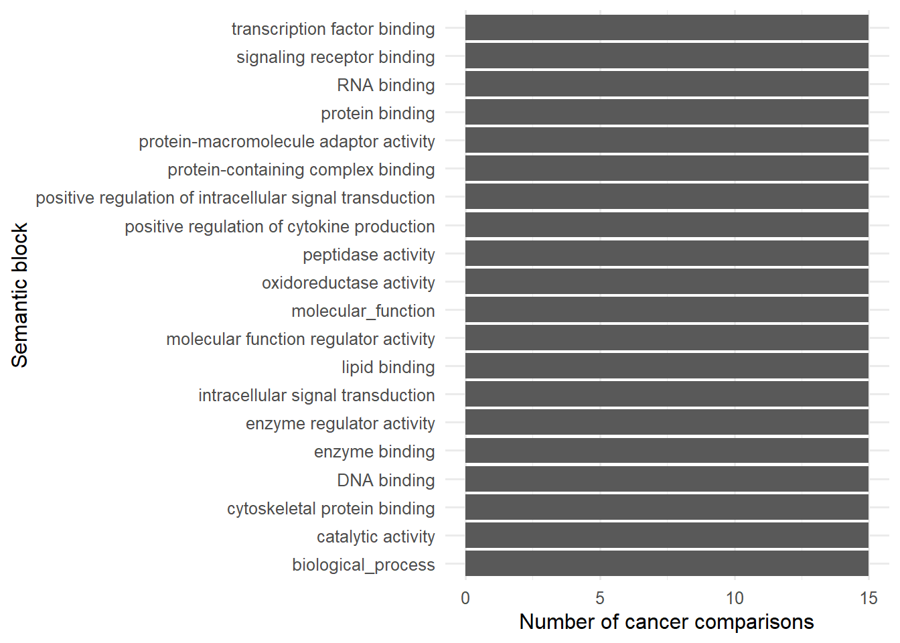
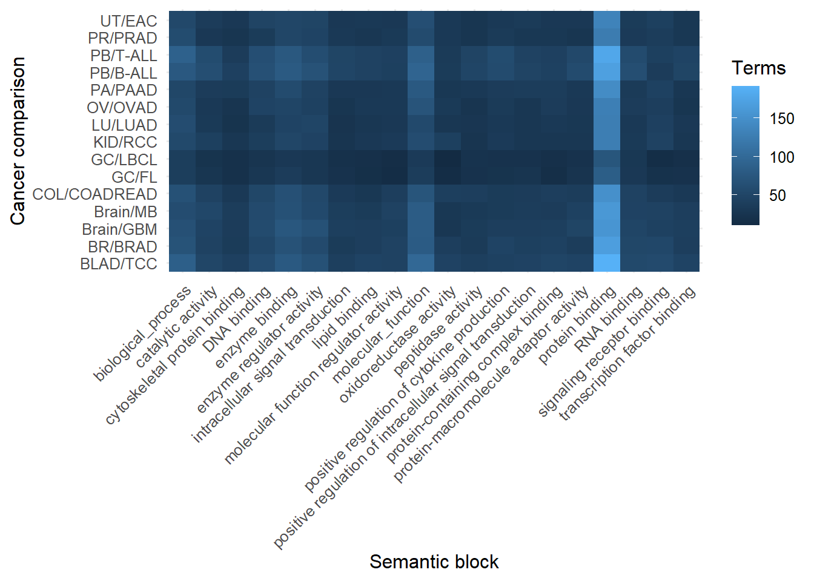

| comparison | archetype_label | stability_class | robustness_class | structural_confidence | n_gene_sets_tested | n_concordant_biological_terms | n_concordant_gene_set_modes | n_semantic_blocks | semantic_block_names | overall_structural_call |
|---|---|---|---|---|---|---|---|---|---|---|
| PB/B-ALL | unstable_mixed | majority-stable | stable_core_archetype | high | 10990 | 141 | 4 | 382 | ATP-dependent activity; DNA binding; DNA damage response; DNA metabolic process; DNA repair; DNA-templated transcription; G protein-coupled receptor signaling pathway; RNA binding; RNA catabolic process; RNA processing; T cell activation; actin cytoskeleton organization; actin filament-based process; activation of immune response; active transmembrane transporter activity; acyltransferase activity; adaptive immune response; adaptive immune response based on somatic recombination of immune receptors built from immunoglobulin superfamily domains; alcohol metabolic process; anatomical structure morphogenesis; animal organ development; animal organ morphogenesis; anion binding; apoptotic process; apoptotic signaling pathway; autophagy; behavior; binding; biological process involved in interspecies interaction between organisms; biological_process; biosynthetic process; blood circulation; blood vessel development; blood vessel morphogenesis; calcium ion transport; carbohydrate derivative binding; carbohydrate derivative biosynthetic process; carbohydrate derivative metabolic process; carbohydrate metabolic process; carboxylic acid metabolic process; catabolic process; catalytic activity; catalytic activity, acting on a protein; cation binding; cell activation; cell activation involved in immune response; cell adhesion; cell communication; cell cycle phase transition; cell cycle process; cell development; cell differentiation; cell junction assembly; cell migration; cell morphogenesis; cell morphogenesis involved in neuron differentiation; cell motility; cell population proliferation; cell projection organization; cell surface receptor protein tyrosine kinase signaling pathway; cell surface receptor signaling pathway; cell-cell adhesion; cell-cell signaling; cellular component assembly; cellular component disassembly; cellular component organization; cellular homeostasis; cellular response to chemical stimulus; cellular response to cytokine stimulus; cellular response to growth factor stimulus; cellular response to hormone stimulus; cellular response to lipid; cellular response to nitrogen compound; cellular response to oxygen-containing compound; cellular response to stress; central nervous system development; channel activity; chemical homeostasis; chemical synaptic transmission; chemotaxis; chromatin organization; chromosome organization; circulatory system process; cytokine-mediated signaling pathway; cytoskeletal protein binding; cytoskeleton organization; defense response; defense response to other organism; defense response to symbiont; developmental growth; embryo development; endocytosis; endomembrane system organization; energy derivation by oxidation of organic compounds; enzyme binding; enzyme regulator activity; enzyme-linked receptor protein signaling pathway; epithelial cell differentiation; epithelium development; establishment of localization in cell; establishment of organelle localization; establishment of protein localization; fatty acid metabolic process; gated channel activity; gene expression; generation of neurons; generation of precursor metabolites and energy; glycerolipid metabolic process; growth; heart contraction; heart development; heart morphogenesis; hemopoiesis; heterocyclic compound binding; hydrolase activity; hydrolase activity, acting on ester bonds; immune response; immune response-activating signaling pathway; immune response-regulating signaling pathway; immune system process; import into cell; inflammatory response; innate immune response; intracellular chemical homeostasis; intracellular protein localization; intracellular receptor signaling pathway; intracellular signal transduction; intracellular transport; kidney development; kinase activity; leukocyte activation; leukocyte cell-cell adhesion; leukocyte migration; lipid binding; lipid biosynthetic process; lipid metabolic process; lipid transport; localization; localization within membrane; lymphocyte activation; lymphocyte differentiation; lymphocyte mediated immunity; mRNA catabolic process; mRNA metabolic process; macroautophagy; macromolecule modification; membrane organization; mesenchyme development; metal ion transmembrane transporter activity; metal ion transport; microtubule cytoskeleton organization; microtubule-based movement; microtubule-based process; mitochondrion organization; mitotic cell cycle; mitotic cell cycle process; modulation of chemical synaptic transmission; molecular adaptor activity; molecular function regulator activity; molecular_function; monoatomic cation channel activity; monoatomic cation homeostasis; monoatomic cation transmembrane transport; monoatomic cation transmembrane transporter activity; monoatomic cation transport; monoatomic ion channel activity; monoatomic ion transmembrane transport; monoatomic ion transmembrane transporter activity; monoatomic ion transport; monocarboxylic acid metabolic process; multicellular organism development; multicellular organismal-level homeostasis; muscle cell differentiation; muscle contraction; muscle structure development; muscle system process; myeloid cell differentiation; negative regulation of apoptotic process; negative regulation of biological process; negative regulation of biosynthetic process; negative regulation of cell differentiation; negative regulation of cellular component organization; negative regulation of developmental process; negative regulation of gene expression; negative regulation of immune system process; negative regulation of intracellular signal transduction; negative regulation of metabolic process; negative regulation of multicellular organismal process; negative regulation of nucleobase-containing compound metabolic process; negative regulation of programmed cell death; negative regulation of protein metabolic process; negative regulation of response to external stimulus; negative regulation of signal transduction; negative regulation of transport; nervous system development; nervous system process; neurogenesis; neuron development; neuron differentiation; neuron projection development; neuron projection morphogenesis; nitrogen compound transport; nucleic acid binding; nucleobase-containing compound catabolic process; nucleobase-containing compound metabolic process; nucleoside phosphate biosynthetic process; nucleotide metabolic process; organelle assembly; organelle fission; organelle localization; organelle organization; organic anion transport; organophosphate metabolic process; oxidoreductase activity; peptidase activity; phosphate-containing compound metabolic process; phospholipid metabolic process; phosphoric ester hydrolase activity; phosphorylation; phosphotransferase activity, alcohol group as acceptor; plasma membrane bounded cell projection organization; positive regulation of RNA metabolic process; positive regulation of biosynthetic process; positive regulation of catabolic process; positive regulation of cell adhesion; positive regulation of cell development; positive regulation of cell differentiation; positive regulation of cell migration; positive regulation of cell motility; positive regulation of cell population proliferation; positive regulation of cell-cell adhesion; positive regulation of cellular component organization; positive regulation of cellular process; positive regulation of cytokine production; positive regulation of defense response; positive regulation of developmental process; positive regulation of gene expression; positive regulation of immune response; positive regulation of immune system process; positive regulation of innate immune response; positive regulation of intracellular signal transduction; positive regulation of leukocyte activation; positive regulation of lymphocyte activation; positive regulation of macromolecule biosynthetic process; positive regulation of macromolecule metabolic process; positive regulation of metabolic process; positive regulation of multicellular organismal process; positive regulation of protein metabolic process; positive regulation of signal transduction; positive regulation of signaling; positive regulation of transport; post-transcriptional regulation of gene expression; post-translational protein modification; programmed cell death; protein binding; protein catabolic process; protein kinase activity; protein localization to organelle; protein maturation; protein metabolic process; protein modification by small protein conjugation or removal; protein modification process; protein phosphorylation; protein serine/threonine kinase activity; protein transport; protein-containing complex assembly; protein-containing complex binding; protein-containing complex organization; protein-macromolecule adaptor activity; proteolysis; purine nucleotide metabolic process; purine ribonucleotide metabolic process; regulation of DNA metabolic process; regulation of DNA-templated transcription; regulation of T cell activation; regulation of anatomical structure morphogenesis; regulation of anatomical structure size; regulation of apoptotic process; regulation of biological quality; regulation of biosynthetic process; regulation of blood circulation; regulation of body fluid levels; regulation of catabolic process; regulation of catalytic activity; regulation of cell adhesion; regulation of cell communication; regulation of cell cycle; regulation of cell cycle process; regulation of cell development; regulation of cell differentiation; regulation of cell migration; regulation of cell population proliferation; regulation of cell projection organization; regulation of cell-cell adhesion; regulation of cellular component biogenesis; regulation of cellular component organization; regulation of cellular localization; regulation of cellular response to stress; regulation of cytokine production; regulation of cytoskeleton organization; regulation of developmental process; regulation of gene expression; regulation of hemopoiesis; regulation of hormone levels; regulation of immune effector process; regulation of immune response; regulation of immune system process; regulation of innate immune response; regulation of intracellular signal transduction; regulation of leukocyte activation; regulation of leukocyte cell-cell adhesion; regulation of leukocyte differentiation; regulation of lipid metabolic process; regulation of localization; regulation of lymphocyte activation; regulation of mRNA metabolic process; regulation of macromolecule metabolic process; regulation of membrane potential; regulation of metabolic process; regulation of metal ion transport; regulation of molecular function; regulation of multicellular organismal development; regulation of multicellular organismal process; regulation of phosphorus metabolic process; regulation of plasma membrane bounded cell projection organization; regulation of primary metabolic process; regulation of programmed cell death; regulation of protein localization; regulation of protein modification process; regulation of response to biotic stimulus; regulation of secretion by cell; regulation of signal transduction; regulation of small molecule metabolic process; regulation of system process; regulation of transmembrane transport; regulation of transport; regulation of vesicle-mediated transport; reproductive process; response to abiotic stimulus; response to biotic stimulus; response to chemical; response to cytokine; response to endogenous stimulus; response to hormone; response to lipid; response to nitrogen compound; response to other organism; response to oxygen-containing compound; response to radiation; response to stress; response to wounding; ribonucleoprotein complex biogenesis; secretion by cell; sensory organ development; signal release; signal transduction; signaling; signaling receptor activity; signaling receptor binding; small molecule binding; small molecule metabolic process; steroid metabolic process; supramolecular fiber organization; synapse organization; synaptic signaling; system development; system process; tissue development; tissue morphogenesis; transcription factor binding; transferase activity; transferase activity, transferring phosphorus-containing groups; translation; transmembrane signaling receptor activity; transmembrane transport; transmembrane transporter activity; transport; transporter activity; tube development; vesicle organization; vesicle-mediated transport; wound healing | constrained_structural_compression |
| COL/COADREAD | majority_QI | majority-stable | stable_boundary_archetype | moderate | 8740 | 108 | 4 | 384 | ATP-dependent activity; DNA binding; DNA damage response; DNA metabolic process; DNA repair; DNA-templated transcription; G protein-coupled receptor signaling pathway; RNA binding; RNA catabolic process; RNA metabolic process; RNA processing; T cell activation; actin cytoskeleton organization; activation of immune response; active transmembrane transporter activity; acyltransferase activity; adaptive immune response; adaptive immune response based on somatic recombination of immune receptors built from immunoglobulin superfamily domains; alcohol metabolic process; anatomical structure morphogenesis; animal organ development; animal organ morphogenesis; anion binding; apoptotic process; apoptotic signaling pathway; autophagy; behavior; binding; biological process involved in interspecies interaction between organisms; biological_process; biosynthetic process; blood circulation; blood vessel development; blood vessel morphogenesis; calcium ion transport; carbohydrate derivative binding; carbohydrate derivative biosynthetic process; carbohydrate derivative metabolic process; carbohydrate metabolic process; carboxylic acid metabolic process; catabolic process; catalytic activity; catalytic activity, acting on a protein; cation binding; cell activation; cell activation involved in immune response; cell adhesion; cell communication; cell cycle phase transition; cell cycle process; cell death; cell development; cell differentiation; cell junction assembly; cell junction organization; cell migration; cell morphogenesis; cell morphogenesis involved in neuron differentiation; cell motility; cell population proliferation; cell projection organization; cell surface receptor protein tyrosine kinase signaling pathway; cell surface receptor signaling pathway; cell-cell adhesion; cell-cell signaling; cellular component disassembly; cellular component organization; cellular homeostasis; cellular response to chemical stimulus; cellular response to cytokine stimulus; cellular response to growth factor stimulus; cellular response to hormone stimulus; cellular response to lipid; cellular response to nitrogen compound; cellular response to oxygen-containing compound; cellular response to stress; central nervous system development; channel activity; chemical homeostasis; chemical synaptic transmission; chemotaxis; chromatin organization; chromosome organization; circulatory system process; cytokine-mediated signaling pathway; cytoskeletal protein binding; cytoskeleton organization; defense response; defense response to symbiont; developmental growth; embryo development; endocytosis; endomembrane system organization; energy derivation by oxidation of organic compounds; enzyme binding; enzyme regulator activity; enzyme-linked receptor protein signaling pathway; epithelial cell differentiation; epithelium development; establishment of localization in cell; establishment of organelle localization; establishment of protein localization; export from cell; fatty acid metabolic process; gated channel activity; gene expression; generation of neurons; generation of precursor metabolites and energy; glycerolipid metabolic process; growth; heart contraction; heart development; heart morphogenesis; hemopoiesis; heterocyclic compound binding; homeostatic process; hydrolase activity; hydrolase activity, acting on ester bonds; immune response; immune response-activating signaling pathway; immune response-regulating signaling pathway; immune system process; import into cell; inflammatory response; innate immune response; intracellular chemical homeostasis; intracellular protein localization; intracellular receptor signaling pathway; intracellular signal transduction; intracellular transport; kidney development; kinase activity; leukocyte activation; leukocyte cell-cell adhesion; leukocyte mediated immunity; leukocyte migration; lipid binding; lipid biosynthetic process; lipid localization; lipid metabolic process; lipid transport; localization; localization within membrane; lymphocyte activation; lymphocyte differentiation; lymphocyte mediated immunity; mRNA catabolic process; mRNA metabolic process; macroautophagy; macromolecule modification; membrane organization; mesenchyme development; metal ion transmembrane transporter activity; metal ion transport; microtubule cytoskeleton organization; microtubule-based movement; microtubule-based process; mitochondrion organization; mitotic cell cycle; mitotic cell cycle process; modulation of chemical synaptic transmission; molecular adaptor activity; molecular function regulator activity; molecular_function; monoatomic cation channel activity; monoatomic cation homeostasis; monoatomic cation transmembrane transport; monoatomic cation transmembrane transporter activity; monoatomic ion channel activity; monoatomic ion homeostasis; monoatomic ion transmembrane transport; monoatomic ion transmembrane transporter activity; monoatomic ion transport; monocarboxylic acid metabolic process; mononuclear cell differentiation; multicellular organism development; multicellular organismal-level homeostasis; muscle cell differentiation; muscle contraction; muscle structure development; muscle system process; myeloid cell differentiation; negative regulation of apoptotic process; negative regulation of biological process; negative regulation of biosynthetic process; negative regulation of cell differentiation; negative regulation of cellular component organization; negative regulation of developmental process; negative regulation of gene expression; negative regulation of immune system process; negative regulation of intracellular signal transduction; negative regulation of metabolic process; negative regulation of multicellular organismal process; negative regulation of nucleobase-containing compound metabolic process; negative regulation of programmed cell death; negative regulation of protein metabolic process; negative regulation of response to external stimulus; negative regulation of signal transduction; negative regulation of transport; nervous system development; nervous system process; neurogenesis; neuron development; neuron differentiation; neuron projection development; neuron projection morphogenesis; nitrogen compound transport; nucleic acid binding; nucleobase-containing compound metabolic process; nucleoside phosphate biosynthetic process; nucleotide metabolic process; organelle assembly; organelle fission; organelle localization; organelle organization; organic anion transport; oxidoreductase activity; peptidase activity; phosphate-containing compound metabolic process; phospholipid metabolic process; phosphoric ester hydrolase activity; phosphotransferase activity, alcohol group as acceptor; plasma membrane bounded cell projection organization; positive regulation of RNA metabolic process; positive regulation of biosynthetic process; positive regulation of catabolic process; positive regulation of cell activation; positive regulation of cell adhesion; positive regulation of cell development; positive regulation of cell differentiation; positive regulation of cell migration; positive regulation of cell motility; positive regulation of cell population proliferation; positive regulation of cell-cell adhesion; positive regulation of cellular component organization; positive regulation of cellular process; positive regulation of cytokine production; positive regulation of defense response; positive regulation of developmental process; positive regulation of gene expression; positive regulation of immune response; positive regulation of immune system process; positive regulation of innate immune response; positive regulation of intracellular signal transduction; positive regulation of leukocyte activation; positive regulation of lymphocyte activation; positive regulation of macromolecule biosynthetic process; positive regulation of macromolecule metabolic process; positive regulation of metabolic process; positive regulation of multicellular organismal process; positive regulation of protein metabolic process; positive regulation of signal transduction; positive regulation of signaling; positive regulation of transport; post-transcriptional regulation of gene expression; post-translational protein modification; programmed cell death; protein binding; protein catabolic process; protein kinase activity; protein localization to organelle; protein maturation; protein metabolic process; protein modification by small protein conjugation or removal; protein modification process; protein phosphorylation; protein serine/threonine kinase activity; protein transport; protein-containing complex assembly; protein-containing complex binding; protein-containing complex organization; protein-macromolecule adaptor activity; proteolysis; purine nucleotide metabolic process; purine ribonucleotide metabolic process; regulation of DNA metabolic process; regulation of DNA-templated transcription; regulation of anatomical structure morphogenesis; regulation of anatomical structure size; regulation of apoptotic process; regulation of biological quality; regulation of blood circulation; regulation of body fluid levels; regulation of catabolic process; regulation of catalytic activity; regulation of cell adhesion; regulation of cell cycle; regulation of cell cycle process; regulation of cell development; regulation of cell differentiation; regulation of cell migration; regulation of cell population proliferation; regulation of cell projection organization; regulation of cell-cell adhesion; regulation of cellular component biogenesis; regulation of cellular localization; regulation of cellular response to stress; regulation of cytokine production; regulation of cytoskeleton organization; regulation of developmental process; regulation of gene expression; regulation of hemopoiesis; regulation of hormone levels; regulation of immune effector process; regulation of immune response; regulation of immune system process; regulation of innate immune response; regulation of intracellular signal transduction; regulation of leukocyte activation; regulation of leukocyte cell-cell adhesion; regulation of leukocyte differentiation; regulation of lipid metabolic process; regulation of localization; regulation of mRNA metabolic process; regulation of macromolecule metabolic process; regulation of membrane potential; regulation of metabolic process; regulation of metal ion transport; regulation of molecular function; regulation of multicellular organismal development; regulation of multicellular organismal process; regulation of phosphorus metabolic process; regulation of plasma membrane bounded cell projection organization; regulation of primary metabolic process; regulation of programmed cell death; regulation of protein localization; regulation of protein metabolic process; regulation of protein modification process; regulation of response to biotic stimulus; regulation of secretion by cell; regulation of signal transduction; regulation of signaling; regulation of small molecule metabolic process; regulation of system process; regulation of transmembrane transport; regulation of transport; regulation of vesicle-mediated transport; reproductive process; response to abiotic stimulus; response to biotic stimulus; response to chemical; response to cytokine; response to endogenous stimulus; response to growth factor; response to hormone; response to lipid; response to nitrogen compound; response to other organism; response to oxygen-containing compound; response to radiation; response to stress; response to wounding; ribonucleoprotein complex biogenesis; secretion by cell; sensory organ development; signal release; signal transduction; signaling; signaling receptor activity; signaling receptor binding; small molecule binding; small molecule metabolic process; steroid metabolic process; supramolecular fiber organization; synapse organization; synaptic signaling; system development; system process; tissue development; tissue morphogenesis; transcription factor binding; transferase activity; transferase activity, transferring phosphorus-containing groups; translation; transmembrane signaling receptor activity; transmembrane transport; transmembrane transporter activity; transport; transporter activity; tube development; vasculature development; vesicle organization; vesicle-mediated transport; wound healing | coordinated_structural_expansion |
| KID/RCC | majority_QIV | majority-stable | stable_core_archetype | high | 7584 | 105 | 4 | 385 | ATP-dependent activity; DNA binding; DNA damage response; DNA metabolic process; DNA repair; DNA-templated transcription; G protein-coupled receptor signaling pathway; RNA binding; RNA catabolic process; RNA processing; T cell activation; actin cytoskeleton organization; actin filament-based process; activation of immune response; active transmembrane transporter activity; acyltransferase activity; adaptive immune response; alcohol metabolic process; anatomical structure morphogenesis; animal organ development; animal organ morphogenesis; anion binding; apoptotic process; apoptotic signaling pathway; autophagy; behavior; binding; biological process involved in interspecies interaction between organisms; biological_process; biosynthetic process; blood circulation; blood vessel development; blood vessel morphogenesis; calcium ion transport; carbohydrate derivative binding; carbohydrate derivative biosynthetic process; carbohydrate derivative metabolic process; carbohydrate metabolic process; carboxylic acid metabolic process; catabolic process; catalytic activity; catalytic activity, acting on a protein; cation binding; cell activation; cell activation involved in immune response; cell adhesion; cell communication; cell cycle phase transition; cell cycle process; cell development; cell differentiation; cell junction assembly; cell junction organization; cell migration; cell morphogenesis; cell morphogenesis involved in neuron differentiation; cell motility; cell population proliferation; cell projection organization; cell surface receptor protein tyrosine kinase signaling pathway; cell surface receptor signaling pathway; cell-cell adhesion; cell-cell signaling; cellular component assembly; cellular component disassembly; cellular component organization; cellular homeostasis; cellular response to chemical stimulus; cellular response to cytokine stimulus; cellular response to growth factor stimulus; cellular response to hormone stimulus; cellular response to lipid; cellular response to nitrogen compound; cellular response to oxygen-containing compound; cellular response to stress; central nervous system development; channel activity; chemical homeostasis; chemical synaptic transmission; chemotaxis; chromatin organization; chromosome organization; circulatory system process; cytokine production; cytokine-mediated signaling pathway; cytoskeletal protein binding; cytoskeleton organization; defense response; defense response to symbiont; developmental growth; embryo development; endocytosis; endomembrane system organization; energy derivation by oxidation of organic compounds; enzyme binding; enzyme regulator activity; enzyme-linked receptor protein signaling pathway; epithelial cell differentiation; epithelium development; establishment of localization in cell; establishment of organelle localization; establishment of protein localization; export from cell; fatty acid metabolic process; gated channel activity; gene expression; generation of neurons; generation of precursor metabolites and energy; glycerolipid metabolic process; growth; heart contraction; heart development; heart morphogenesis; hemopoiesis; heterocyclic compound binding; hydrolase activity; hydrolase activity, acting on ester bonds; immune response; immune response-activating signaling pathway; immune response-regulating signaling pathway; immune system process; import into cell; inflammatory response; innate immune response; intracellular chemical homeostasis; intracellular protein localization; intracellular receptor signaling pathway; intracellular signal transduction; intracellular transport; kidney development; kinase activity; leukocyte activation; leukocyte cell-cell adhesion; leukocyte mediated immunity; leukocyte migration; lipid binding; lipid biosynthetic process; lipid localization; lipid metabolic process; lipid transport; localization; localization within membrane; lymphocyte activation; lymphocyte differentiation; lymphocyte mediated immunity; mRNA catabolic process; mRNA metabolic process; macroautophagy; macromolecule catabolic process; macromolecule localization; macromolecule modification; membrane organization; mesenchyme development; metal ion transport; microtubule cytoskeleton organization; microtubule-based movement; microtubule-based process; mitochondrion organization; mitotic cell cycle; mitotic cell cycle process; modulation of chemical synaptic transmission; molecular adaptor activity; molecular function regulator activity; molecular_function; monoatomic cation channel activity; monoatomic cation homeostasis; monoatomic cation transmembrane transport; monoatomic cation transmembrane transporter activity; monoatomic cation transport; monoatomic ion channel activity; monoatomic ion homeostasis; monoatomic ion transmembrane transport; monoatomic ion transmembrane transporter activity; monoatomic ion transport; monocarboxylic acid metabolic process; mononuclear cell differentiation; multicellular organism development; multicellular organismal-level homeostasis; muscle cell differentiation; muscle contraction; muscle structure development; muscle system process; myeloid cell differentiation; negative regulation of apoptotic process; negative regulation of biological process; negative regulation of biosynthetic process; negative regulation of cell differentiation; negative regulation of cellular component organization; negative regulation of cellular process; negative regulation of developmental process; negative regulation of gene expression; negative regulation of immune system process; negative regulation of intracellular signal transduction; negative regulation of metabolic process; negative regulation of multicellular organismal process; negative regulation of nucleobase-containing compound metabolic process; negative regulation of programmed cell death; negative regulation of protein metabolic process; negative regulation of response to external stimulus; negative regulation of signal transduction; negative regulation of transport; nervous system development; nervous system process; neurogenesis; neuron development; neuron differentiation; neuron projection development; neuron projection morphogenesis; nitrogen compound transport; nucleic acid binding; nucleobase-containing compound metabolic process; nucleoside phosphate biosynthetic process; nucleotide metabolic process; organelle assembly; organelle fission; organelle localization; organelle organization; organic anion transport; oxidoreductase activity; peptidase activity; phosphate-containing compound metabolic process; phospholipid metabolic process; phosphoric ester hydrolase activity; phosphorylation; phosphotransferase activity, alcohol group as acceptor; plasma membrane bounded cell projection organization; positive regulation of RNA metabolic process; positive regulation of biosynthetic process; positive regulation of catabolic process; positive regulation of cell adhesion; positive regulation of cell development; positive regulation of cell differentiation; positive regulation of cell migration; positive regulation of cell motility; positive regulation of cell population proliferation; positive regulation of cell-cell adhesion; positive regulation of cellular component organization; positive regulation of cellular process; positive regulation of cytokine production; positive regulation of defense response; positive regulation of developmental process; positive regulation of gene expression; positive regulation of immune response; positive regulation of innate immune response; positive regulation of intracellular signal transduction; positive regulation of leukocyte activation; positive regulation of lymphocyte activation; positive regulation of macromolecule biosynthetic process; positive regulation of macromolecule metabolic process; positive regulation of metabolic process; positive regulation of multicellular organismal process; positive regulation of protein metabolic process; positive regulation of signal transduction; positive regulation of transport; post-transcriptional regulation of gene expression; post-translational protein modification; programmed cell death; protein binding; protein catabolic process; protein kinase activity; protein localization to organelle; protein maturation; protein metabolic process; protein modification by small protein conjugation or removal; protein modification process; protein phosphorylation; protein serine/threonine kinase activity; protein transport; protein-containing complex assembly; protein-containing complex binding; protein-macromolecule adaptor activity; proteolysis; purine nucleotide metabolic process; purine ribonucleotide metabolic process; purine-containing compound metabolic process; regulation of DNA metabolic process; regulation of DNA-templated transcription; regulation of anatomical structure morphogenesis; regulation of anatomical structure size; regulation of apoptotic process; regulation of biological quality; regulation of biosynthetic process; regulation of blood circulation; regulation of body fluid levels; regulation of catabolic process; regulation of catalytic activity; regulation of cell adhesion; regulation of cell cycle; regulation of cell cycle process; regulation of cell development; regulation of cell differentiation; regulation of cell migration; regulation of cell motility; regulation of cell population proliferation; regulation of cell projection organization; regulation of cell-cell adhesion; regulation of cellular component biogenesis; regulation of cellular localization; regulation of cellular response to stress; regulation of cytokine production; regulation of cytoskeleton organization; regulation of developmental process; regulation of gene expression; regulation of hemopoiesis; regulation of hormone levels; regulation of immune effector process; regulation of immune response; regulation of immune system process; regulation of innate immune response; regulation of intracellular signal transduction; regulation of leukocyte cell-cell adhesion; regulation of leukocyte differentiation; regulation of lipid metabolic process; regulation of localization; regulation of lymphocyte activation; regulation of mRNA metabolic process; regulation of macromolecule metabolic process; regulation of membrane potential; regulation of metabolic process; regulation of metal ion transport; regulation of molecular function; regulation of multicellular organismal development; regulation of multicellular organismal process; regulation of phosphorus metabolic process; regulation of plasma membrane bounded cell projection organization; regulation of primary metabolic process; regulation of programmed cell death; regulation of protein localization; regulation of protein metabolic process; regulation of protein modification process; regulation of response to biotic stimulus; regulation of secretion by cell; regulation of signal transduction; regulation of small molecule metabolic process; regulation of system process; regulation of transmembrane transport; regulation of transport; regulation of vesicle-mediated transport; reproductive process; response to abiotic stimulus; response to biotic stimulus; response to chemical; response to cytokine; response to endogenous stimulus; response to growth factor; response to hormone; response to lipid; response to nitrogen compound; response to other organism; response to oxygen-containing compound; response to radiation; response to stress; response to wounding; ribonucleoprotein complex biogenesis; secretion by cell; sensory organ development; signal release; signal transduction; signaling; signaling receptor activity; signaling receptor binding; small molecule binding; small molecule metabolic process; steroid metabolic process; supramolecular fiber organization; synapse organization; synaptic signaling; system development; system process; tissue development; tissue morphogenesis; transcription factor binding; transferase activity; transferase activity, transferring phosphorus-containing groups; translation; transmembrane signaling receptor activity; transmembrane transport; transmembrane transporter activity; transport; transporter activity; tube development; vasculature development; vesicle organization; vesicle-mediated transport; wound healing | expansion_under_constraint |
| PB/T-ALL | stable_QII | cross-chip/cross-filter stable | stable_boundary_archetype | moderate | 10556 | 101 | 3 | 383 | ATP-dependent activity; DNA binding; DNA damage response; DNA metabolic process; DNA repair; DNA-templated transcription; G protein-coupled receptor signaling pathway; MF_UNSPECIFIED; RNA binding; RNA catabolic process; RNA metabolic process; RNA processing; T cell activation; actin cytoskeleton organization; actin filament-based process; activation of immune response; active transmembrane transporter activity; acyltransferase activity; adaptive immune response; adaptive immune response based on somatic recombination of immune receptors built from immunoglobulin superfamily domains; alcohol metabolic process; anatomical structure morphogenesis; animal organ development; animal organ morphogenesis; anion binding; apoptotic process; apoptotic signaling pathway; autophagy; behavior; binding; biological process involved in interspecies interaction between organisms; biological_process; biosynthetic process; blood circulation; blood vessel development; blood vessel morphogenesis; calcium ion transport; carbohydrate derivative binding; carbohydrate derivative biosynthetic process; carbohydrate derivative metabolic process; carbohydrate metabolic process; carboxylic acid metabolic process; catabolic process; catalytic activity; catalytic activity, acting on a protein; cation binding; cell activation involved in immune response; cell adhesion; cell communication; cell cycle phase transition; cell cycle process; cell development; cell differentiation; cell junction assembly; cell junction organization; cell migration; cell morphogenesis; cell morphogenesis involved in neuron differentiation; cell motility; cell population proliferation; cell projection organization; cell surface receptor protein tyrosine kinase signaling pathway; cell surface receptor signaling pathway; cell-cell adhesion; cell-cell signaling; cellular component assembly; cellular component disassembly; cellular component organization; cellular homeostasis; cellular response to chemical stimulus; cellular response to cytokine stimulus; cellular response to growth factor stimulus; cellular response to hormone stimulus; cellular response to lipid; cellular response to nitrogen compound; cellular response to oxygen-containing compound; cellular response to stress; central nervous system development; channel activity; chemical homeostasis; chemical synaptic transmission; chemotaxis; chromatin organization; chromosome organization; circulatory system process; cytokine-mediated signaling pathway; cytoskeletal protein binding; cytoskeleton organization; defense response; defense response to other organism; defense response to symbiont; developmental growth; embryo development; endocytosis; endomembrane system organization; energy derivation by oxidation of organic compounds; enzyme binding; enzyme regulator activity; enzyme-linked receptor protein signaling pathway; epithelial cell differentiation; epithelium development; establishment of localization in cell; establishment of organelle localization; establishment of protein localization; export from cell; fatty acid metabolic process; gated channel activity; gene expression; generation of neurons; generation of precursor metabolites and energy; glycerolipid metabolic process; growth; heart contraction; heart development; heart morphogenesis; hemopoiesis; heterocyclic compound binding; hydrolase activity; hydrolase activity, acting on ester bonds; immune response; immune response-activating signaling pathway; immune response-regulating signaling pathway; immune system process; import into cell; inflammatory response; innate immune response; intracellular chemical homeostasis; intracellular protein localization; intracellular receptor signaling pathway; intracellular signal transduction; intracellular transport; kidney development; kinase activity; leukocyte activation; leukocyte cell-cell adhesion; leukocyte mediated immunity; leukocyte migration; lipid binding; lipid biosynthetic process; lipid metabolic process; lipid transport; localization; localization within membrane; lymphocyte activation; lymphocyte differentiation; lymphocyte mediated immunity; mRNA catabolic process; mRNA metabolic process; macroautophagy; macromolecule localization; macromolecule modification; membrane organization; mesenchyme development; metal ion transmembrane transporter activity; metal ion transport; microtubule cytoskeleton organization; microtubule-based movement; microtubule-based process; mitochondrion organization; mitotic cell cycle; mitotic cell cycle process; modulation of chemical synaptic transmission; molecular adaptor activity; molecular function regulator activity; molecular_function; monoatomic cation channel activity; monoatomic cation homeostasis; monoatomic cation transmembrane transport; monoatomic cation transmembrane transporter activity; monoatomic cation transport; monoatomic ion channel activity; monoatomic ion transmembrane transport; monoatomic ion transmembrane transporter activity; monoatomic ion transport; monocarboxylic acid metabolic process; multicellular organism development; multicellular organismal-level homeostasis; muscle cell differentiation; muscle contraction; muscle structure development; muscle system process; myeloid cell differentiation; negative regulation of apoptotic process; negative regulation of biological process; negative regulation of biosynthetic process; negative regulation of cell differentiation; negative regulation of cellular component organization; negative regulation of developmental process; negative regulation of gene expression; negative regulation of immune system process; negative regulation of intracellular signal transduction; negative regulation of multicellular organismal process; negative regulation of nucleobase-containing compound metabolic process; negative regulation of programmed cell death; negative regulation of protein metabolic process; negative regulation of response to external stimulus; negative regulation of signal transduction; negative regulation of transport; nervous system development; nervous system process; neurogenesis; neuron development; neuron differentiation; neuron projection development; neuron projection morphogenesis; nitrogen compound transport; nucleic acid binding; nucleobase-containing compound catabolic process; nucleobase-containing compound metabolic process; nucleobase-containing small molecule metabolic process; nucleoside phosphate biosynthetic process; nucleotide metabolic process; organelle assembly; organelle fission; organelle localization; organelle organization; organic anion transport; oxidoreductase activity; peptidase activity; phosphate-containing compound metabolic process; phospholipid metabolic process; phosphoric ester hydrolase activity; phosphorylation; phosphotransferase activity, alcohol group as acceptor; plasma membrane bounded cell projection organization; positive regulation of RNA metabolic process; positive regulation of biosynthetic process; positive regulation of catabolic process; positive regulation of cell adhesion; positive regulation of cell development; positive regulation of cell differentiation; positive regulation of cell migration; positive regulation of cell motility; positive regulation of cell population proliferation; positive regulation of cell-cell adhesion; positive regulation of cellular component organization; positive regulation of cellular process; positive regulation of cytokine production; positive regulation of defense response; positive regulation of developmental process; positive regulation of gene expression; positive regulation of immune response; positive regulation of immune system process; positive regulation of innate immune response; positive regulation of intracellular signal transduction; positive regulation of leukocyte activation; positive regulation of lymphocyte activation; positive regulation of macromolecule biosynthetic process; positive regulation of macromolecule metabolic process; positive regulation of metabolic process; positive regulation of multicellular organismal process; positive regulation of protein metabolic process; positive regulation of signal transduction; positive regulation of signaling; positive regulation of transport; post-transcriptional regulation of gene expression; post-translational protein modification; programmed cell death; protein binding; protein catabolic process; protein kinase activity; protein localization to organelle; protein maturation; protein metabolic process; protein modification by small protein conjugation or removal; protein modification process; protein phosphorylation; protein serine/threonine kinase activity; protein transport; protein-containing complex assembly; protein-containing complex binding; protein-macromolecule adaptor activity; proteolysis; purine nucleotide metabolic process; purine ribonucleotide metabolic process; regulation of DNA metabolic process; regulation of DNA-templated transcription; regulation of anatomical structure morphogenesis; regulation of anatomical structure size; regulation of apoptotic process; regulation of biological quality; regulation of biosynthetic process; regulation of blood circulation; regulation of body fluid levels; regulation of catabolic process; regulation of catalytic activity; regulation of cell adhesion; regulation of cell cycle; regulation of cell cycle process; regulation of cell development; regulation of cell differentiation; regulation of cell migration; regulation of cell motility; regulation of cell population proliferation; regulation of cell projection organization; regulation of cell-cell adhesion; regulation of cellular component biogenesis; regulation of cellular localization; regulation of cellular response to stress; regulation of cytokine production; regulation of cytoskeleton organization; regulation of developmental process; regulation of gene expression; regulation of hemopoiesis; regulation of hormone levels; regulation of immune effector process; regulation of immune response; regulation of immune system process; regulation of innate immune response; regulation of intracellular signal transduction; regulation of leukocyte activation; regulation of leukocyte cell-cell adhesion; regulation of leukocyte differentiation; regulation of lipid metabolic process; regulation of localization; regulation of mRNA metabolic process; regulation of macromolecule metabolic process; regulation of membrane potential; regulation of metabolic process; regulation of metal ion transport; regulation of molecular function; regulation of multicellular organismal development; regulation of multicellular organismal process; regulation of phosphorus metabolic process; regulation of plasma membrane bounded cell projection organization; regulation of primary metabolic process; regulation of programmed cell death; regulation of protein localization; regulation of protein metabolic process; regulation of protein modification process; regulation of response to biotic stimulus; regulation of secretion by cell; regulation of signal transduction; regulation of signaling; regulation of small molecule metabolic process; regulation of system process; regulation of transmembrane transport; regulation of transport; regulation of vesicle-mediated transport; reproductive process; response to abiotic stimulus; response to biotic stimulus; response to chemical; response to cytokine; response to endogenous stimulus; response to hormone; response to lipid; response to nitrogen compound; response to other organism; response to oxygen-containing compound; response to radiation; response to stress; response to wounding; ribonucleoprotein complex biogenesis; secretion by cell; sensory organ development; signal release; signal transduction; signaling; signaling receptor activity; signaling receptor binding; small molecule binding; small molecule metabolic process; steroid metabolic process; supramolecular fiber organization; synapse organization; system development; system process; tissue development; tissue morphogenesis; transcription factor binding; transferase activity; transferase activity, transferring phosphorus-containing groups; translation; transmembrane signaling receptor activity; transmembrane transport; transmembrane transporter activity; transport; transporter activity; tube development; vesicle organization; vesicle-mediated transport; wound healing | constrained_structural_compression |
| BR/BRAD | stable_QI | cross-chip/cross-filter stable | single_axis_flipper | low | 9908 | 51 | 3 | 380 | ATP-dependent activity; DNA binding; DNA damage response; DNA metabolic process; DNA repair; DNA-templated transcription; G protein-coupled receptor signaling pathway; RNA binding; RNA catabolic process; RNA metabolic process; RNA processing; T cell activation; actin cytoskeleton organization; actin filament-based process; activation of immune response; active transmembrane transporter activity; acyltransferase activity; adaptive immune response; alcohol metabolic process; anatomical structure morphogenesis; animal organ development; animal organ morphogenesis; anion binding; apoptotic process; apoptotic signaling pathway; autophagy; behavior; binding; biological process involved in interspecies interaction between organisms; biological_process; biosynthetic process; blood circulation; blood vessel development; blood vessel morphogenesis; calcium ion transport; carbohydrate derivative binding; carbohydrate derivative biosynthetic process; carbohydrate derivative metabolic process; carbohydrate metabolic process; carboxylic acid metabolic process; catabolic process; catalytic activity; catalytic activity, acting on a protein; cation binding; cell activation involved in immune response; cell adhesion; cell communication; cell cycle phase transition; cell cycle process; cell development; cell differentiation; cell junction assembly; cell junction organization; cell migration; cell morphogenesis; cell morphogenesis involved in neuron differentiation; cell motility; cell population proliferation; cell projection organization; cell surface receptor protein tyrosine kinase signaling pathway; cell surface receptor signaling pathway; cell-cell adhesion; cell-cell signaling; cellular component assembly; cellular component disassembly; cellular component organization; cellular homeostasis; cellular response to chemical stimulus; cellular response to cytokine stimulus; cellular response to growth factor stimulus; cellular response to hormone stimulus; cellular response to lipid; cellular response to nitrogen compound; cellular response to oxygen-containing compound; cellular response to stress; central nervous system development; channel activity; chemical homeostasis; chemical synaptic transmission; chemotaxis; chromatin organization; chromosome organization; circulatory system development; circulatory system process; cytokine-mediated signaling pathway; cytoskeletal protein binding; cytoskeleton organization; defense response; defense response to other organism; defense response to symbiont; developmental growth; embryo development; endocytosis; endomembrane system organization; energy derivation by oxidation of organic compounds; enzyme binding; enzyme regulator activity; enzyme-linked receptor protein signaling pathway; epithelial cell differentiation; epithelium development; establishment of organelle localization; establishment of protein localization; export from cell; fatty acid metabolic process; gated channel activity; gene expression; generation of neurons; generation of precursor metabolites and energy; glycerolipid metabolic process; growth; heart contraction; heart development; heart morphogenesis; hemopoiesis; heterocyclic compound binding; hydrolase activity; hydrolase activity, acting on ester bonds; immune response; immune response-activating signaling pathway; immune response-regulating signaling pathway; immune system process; import into cell; inflammatory response; innate immune response; intracellular chemical homeostasis; intracellular protein localization; intracellular receptor signaling pathway; intracellular signal transduction; intracellular transport; kidney development; kinase activity; leukocyte activation; leukocyte cell-cell adhesion; leukocyte mediated immunity; leukocyte migration; lipid binding; lipid biosynthetic process; lipid metabolic process; lipid transport; localization; localization within membrane; lymphocyte activation; lymphocyte differentiation; lymphocyte mediated immunity; mRNA catabolic process; mRNA metabolic process; macroautophagy; macromolecule modification; membrane organization; mesenchyme development; metal ion transmembrane transporter activity; metal ion transport; microtubule cytoskeleton organization; microtubule-based movement; microtubule-based process; mitochondrion organization; mitotic cell cycle; mitotic cell cycle process; modulation of chemical synaptic transmission; molecular adaptor activity; molecular function regulator activity; molecular_function; monoatomic cation channel activity; monoatomic cation homeostasis; monoatomic cation transmembrane transport; monoatomic cation transmembrane transporter activity; monoatomic cation transport; monoatomic ion channel activity; monoatomic ion homeostasis; monoatomic ion transmembrane transport; monoatomic ion transmembrane transporter activity; monoatomic ion transport; monocarboxylic acid metabolic process; mononuclear cell differentiation; multicellular organism development; multicellular organismal-level homeostasis; muscle cell differentiation; muscle contraction; muscle structure development; muscle system process; myeloid cell differentiation; negative regulation of apoptotic process; negative regulation of biological process; negative regulation of biosynthetic process; negative regulation of cell differentiation; negative regulation of cellular component organization; negative regulation of cellular process; negative regulation of developmental process; negative regulation of gene expression; negative regulation of immune system process; negative regulation of intracellular signal transduction; negative regulation of metabolic process; negative regulation of multicellular organismal process; negative regulation of nucleobase-containing compound metabolic process; negative regulation of programmed cell death; negative regulation of protein metabolic process; negative regulation of response to external stimulus; negative regulation of signal transduction; negative regulation of transport; nervous system development; nervous system process; neurogenesis; neuron development; neuron differentiation; neuron projection development; neuron projection morphogenesis; nitrogen compound transport; nucleic acid binding; nucleobase-containing compound metabolic process; nucleoside phosphate biosynthetic process; nucleotide metabolic process; organelle assembly; organelle fission; organelle localization; organelle organization; organic anion transport; oxidoreductase activity; peptidase activity; phosphate-containing compound metabolic process; phospholipid metabolic process; phosphoric ester hydrolase activity; phosphorylation; phosphotransferase activity, alcohol group as acceptor; plasma membrane bounded cell projection organization; positive regulation of RNA metabolic process; positive regulation of biosynthetic process; positive regulation of catabolic process; positive regulation of cell activation; positive regulation of cell adhesion; positive regulation of cell development; positive regulation of cell differentiation; positive regulation of cell migration; positive regulation of cell population proliferation; positive regulation of cell-cell adhesion; positive regulation of cellular component organization; positive regulation of cellular process; positive regulation of cytokine production; positive regulation of defense response; positive regulation of developmental process; positive regulation of gene expression; positive regulation of immune response; positive regulation of immune system process; positive regulation of innate immune response; positive regulation of intracellular signal transduction; positive regulation of leukocyte activation; positive regulation of lymphocyte activation; positive regulation of macromolecule biosynthetic process; positive regulation of macromolecule metabolic process; positive regulation of metabolic process; positive regulation of multicellular organismal process; positive regulation of protein metabolic process; positive regulation of signal transduction; positive regulation of signaling; positive regulation of transport; post-transcriptional regulation of gene expression; post-translational protein modification; programmed cell death; protein binding; protein catabolic process; protein kinase activity; protein localization to organelle; protein maturation; protein metabolic process; protein modification by small protein conjugation or removal; protein modification process; protein phosphorylation; protein serine/threonine kinase activity; protein transport; protein-containing complex assembly; protein-containing complex binding; protein-containing complex organization; protein-macromolecule adaptor activity; proteolysis; purine ribonucleotide metabolic process; regulation of DNA metabolic process; regulation of DNA-templated transcription; regulation of anatomical structure morphogenesis; regulation of anatomical structure size; regulation of apoptotic process; regulation of biological quality; regulation of blood circulation; regulation of body fluid levels; regulation of catabolic process; regulation of catalytic activity; regulation of cell adhesion; regulation of cell cycle; regulation of cell cycle process; regulation of cell development; regulation of cell differentiation; regulation of cell migration; regulation of cell motility; regulation of cell population proliferation; regulation of cell-cell adhesion; regulation of cellular component biogenesis; regulation of cellular localization; regulation of cellular response to stress; regulation of cytokine production; regulation of cytoskeleton organization; regulation of developmental process; regulation of gene expression; regulation of hemopoiesis; regulation of hormone levels; regulation of immune effector process; regulation of immune response; regulation of immune system process; regulation of innate immune response; regulation of intracellular signal transduction; regulation of leukocyte cell-cell adhesion; regulation of leukocyte differentiation; regulation of lipid metabolic process; regulation of localization; regulation of lymphocyte activation; regulation of mRNA metabolic process; regulation of macromolecule metabolic process; regulation of membrane potential; regulation of metabolic process; regulation of metal ion transport; regulation of molecular function; regulation of multicellular organismal development; regulation of multicellular organismal process; regulation of phosphorus metabolic process; regulation of plasma membrane bounded cell projection organization; regulation of primary metabolic process; regulation of programmed cell death; regulation of protein localization; regulation of protein metabolic process; regulation of protein modification process; regulation of response to biotic stimulus; regulation of secretion by cell; regulation of signal transduction; regulation of small molecule metabolic process; regulation of system process; regulation of transmembrane transport; regulation of transport; regulation of vesicle-mediated transport; reproductive process; response to abiotic stimulus; response to biotic stimulus; response to chemical; response to cytokine; response to endogenous stimulus; response to growth factor; response to hormone; response to lipid; response to nitrogen compound; response to other organism; response to oxygen-containing compound; response to radiation; response to stress; response to wounding; ribonucleoprotein complex biogenesis; secretion by cell; sensory organ development; signal release; signal transduction; signaling; signaling receptor activity; signaling receptor binding; small molecule binding; steroid metabolic process; supramolecular fiber organization; synapse organization; synaptic signaling; system development; system process; tissue development; tissue morphogenesis; transcription factor binding; transferase activity; transferase activity, transferring phosphorus-containing groups; translation; transmembrane signaling receptor activity; transmembrane transport; transmembrane transporter activity; transport; transporter activity; tube development; vesicle organization; vesicle-mediated transport; wound healing | coordinated_structural_expansion |
| PA/PAAD | unstable_mixed | unstable | stable_boundary_archetype | moderate | 8234 | 48 | 3 | 379 | ATP-dependent activity; DNA binding; DNA damage response; DNA metabolic process; DNA repair; DNA-templated transcription; G protein-coupled receptor signaling pathway; RNA binding; RNA catabolic process; RNA processing; T cell activation; actin cytoskeleton organization; activation of immune response; active transmembrane transporter activity; acyltransferase activity; adaptive immune response; alcohol metabolic process; anatomical structure morphogenesis; animal organ development; animal organ morphogenesis; anion binding; apoptotic process; apoptotic signaling pathway; autophagy; behavior; binding; biological process involved in interspecies interaction between organisms; biological_process; biosynthetic process; blood circulation; blood vessel development; blood vessel morphogenesis; calcium ion transport; carbohydrate derivative binding; carbohydrate derivative biosynthetic process; carbohydrate derivative metabolic process; carbohydrate metabolic process; carboxylic acid metabolic process; catabolic process; catalytic activity; catalytic activity, acting on a protein; cation binding; cell activation; cell activation involved in immune response; cell adhesion; cell communication; cell cycle phase transition; cell cycle process; cell development; cell differentiation; cell junction assembly; cell junction organization; cell migration; cell morphogenesis; cell morphogenesis involved in neuron differentiation; cell motility; cell population proliferation; cell projection organization; cell surface receptor protein tyrosine kinase signaling pathway; cell surface receptor signaling pathway; cell-cell adhesion; cell-cell signaling; cellular component assembly; cellular component disassembly; cellular component organization; cellular homeostasis; cellular response to chemical stimulus; cellular response to cytokine stimulus; cellular response to growth factor stimulus; cellular response to hormone stimulus; cellular response to lipid; cellular response to nitrogen compound; cellular response to oxygen-containing compound; cellular response to stress; central nervous system development; channel activity; chemical homeostasis; chemical synaptic transmission; chemotaxis; chromatin organization; chromosome organization; circulatory system process; cytokine-mediated signaling pathway; cytoskeletal protein binding; cytoskeleton organization; defense response; defense response to symbiont; developmental growth; embryo development; endocytosis; endomembrane system organization; energy derivation by oxidation of organic compounds; enzyme binding; enzyme regulator activity; enzyme-linked receptor protein signaling pathway; epithelial cell differentiation; epithelium development; establishment of localization in cell; establishment of organelle localization; establishment of protein localization; export from cell; fatty acid metabolic process; gated channel activity; gene expression; generation of neurons; generation of precursor metabolites and energy; glycerolipid metabolic process; growth; heart contraction; heart development; heart morphogenesis; hemopoiesis; heterocyclic compound binding; hydrolase activity; hydrolase activity, acting on ester bonds; immune response; immune response-activating signaling pathway; immune response-regulating signaling pathway; immune system process; import into cell; inflammatory response; innate immune response; intracellular chemical homeostasis; intracellular protein localization; intracellular receptor signaling pathway; intracellular signal transduction; intracellular transport; kidney development; kinase activity; leukocyte activation; leukocyte cell-cell adhesion; leukocyte mediated immunity; leukocyte migration; lipid binding; lipid biosynthetic process; lipid localization; lipid metabolic process; lipid transport; localization; localization within membrane; lymphocyte activation; lymphocyte differentiation; lymphocyte mediated immunity; mRNA catabolic process; mRNA metabolic process; macroautophagy; macromolecule localization; macromolecule modification; membrane organization; mesenchyme development; metal ion transmembrane transporter activity; metal ion transport; microtubule cytoskeleton organization; microtubule-based movement; microtubule-based process; mitochondrion organization; mitotic cell cycle; mitotic cell cycle process; modulation of chemical synaptic transmission; molecular adaptor activity; molecular function regulator activity; molecular_function; monoatomic cation channel activity; monoatomic cation homeostasis; monoatomic cation transmembrane transport; monoatomic cation transmembrane transporter activity; monoatomic cation transport; monoatomic ion channel activity; monoatomic ion transmembrane transport; monoatomic ion transmembrane transporter activity; monoatomic ion transport; monocarboxylic acid metabolic process; mononuclear cell differentiation; multicellular organism development; multicellular organismal-level homeostasis; muscle cell differentiation; muscle contraction; muscle structure development; muscle system process; myeloid cell differentiation; negative regulation of apoptotic process; negative regulation of biological process; negative regulation of biosynthetic process; negative regulation of cell differentiation; negative regulation of cellular component organization; negative regulation of cellular process; negative regulation of gene expression; negative regulation of immune system process; negative regulation of intracellular signal transduction; negative regulation of multicellular organismal process; negative regulation of nucleobase-containing compound metabolic process; negative regulation of programmed cell death; negative regulation of protein metabolic process; negative regulation of response to external stimulus; negative regulation of signal transduction; negative regulation of transport; nervous system development; nervous system process; neurogenesis; neuron development; neuron differentiation; neuron projection development; neuron projection morphogenesis; nitrogen compound transport; nucleic acid binding; nucleobase-containing compound metabolic process; nucleobase-containing small molecule metabolic process; nucleoside phosphate biosynthetic process; nucleotide metabolic process; organelle assembly; organelle fission; organelle localization; organelle organization; organic anion transport; oxidoreductase activity; peptidase activity; phosphate-containing compound metabolic process; phospholipid metabolic process; phosphoric ester hydrolase activity; phosphorylation; phosphotransferase activity, alcohol group as acceptor; plasma membrane bounded cell projection organization; positive regulation of RNA metabolic process; positive regulation of biosynthetic process; positive regulation of catabolic process; positive regulation of cell activation; positive regulation of cell adhesion; positive regulation of cell development; positive regulation of cell differentiation; positive regulation of cell migration; positive regulation of cell motility; positive regulation of cell population proliferation; positive regulation of cell-cell adhesion; positive regulation of cellular component organization; positive regulation of cellular process; positive regulation of cytokine production; positive regulation of defense response; positive regulation of developmental process; positive regulation of gene expression; positive regulation of immune response; positive regulation of innate immune response; positive regulation of intracellular signal transduction; positive regulation of leukocyte activation; positive regulation of lymphocyte activation; positive regulation of macromolecule biosynthetic process; positive regulation of macromolecule metabolic process; positive regulation of metabolic process; positive regulation of multicellular organismal process; positive regulation of protein metabolic process; positive regulation of signal transduction; positive regulation of transport; post-transcriptional regulation of gene expression; post-translational protein modification; programmed cell death; protein binding; protein catabolic process; protein kinase activity; protein localization to organelle; protein maturation; protein metabolic process; protein modification by small protein conjugation or removal; protein modification process; protein phosphorylation; protein serine/threonine kinase activity; protein transport; protein-containing complex assembly; protein-containing complex binding; protein-containing complex organization; protein-macromolecule adaptor activity; proteolysis; purine ribonucleotide metabolic process; regulation of DNA metabolic process; regulation of DNA-templated transcription; regulation of anatomical structure morphogenesis; regulation of anatomical structure size; regulation of apoptotic process; regulation of biological quality; regulation of blood circulation; regulation of body fluid levels; regulation of catabolic process; regulation of catalytic activity; regulation of cell adhesion; regulation of cell cycle; regulation of cell cycle process; regulation of cell development; regulation of cell differentiation; regulation of cell migration; regulation of cell motility; regulation of cell population proliferation; regulation of cell projection organization; regulation of cell-cell adhesion; regulation of cellular component biogenesis; regulation of cellular localization; regulation of cellular response to stress; regulation of cytokine production; regulation of cytoskeleton organization; regulation of developmental process; regulation of gene expression; regulation of hemopoiesis; regulation of hormone levels; regulation of immune effector process; regulation of immune response; regulation of immune system process; regulation of innate immune response; regulation of intracellular signal transduction; regulation of leukocyte cell-cell adhesion; regulation of leukocyte differentiation; regulation of lipid metabolic process; regulation of localization; regulation of lymphocyte activation; regulation of mRNA metabolic process; regulation of macromolecule metabolic process; regulation of membrane potential; regulation of metabolic process; regulation of metal ion transport; regulation of molecular function; regulation of multicellular organismal development; regulation of multicellular organismal process; regulation of phosphorus metabolic process; regulation of plasma membrane bounded cell projection organization; regulation of primary metabolic process; regulation of programmed cell death; regulation of protein localization; regulation of protein metabolic process; regulation of protein modification process; regulation of response to biotic stimulus; regulation of secretion by cell; regulation of signal transduction; regulation of small molecule metabolic process; regulation of system process; regulation of transmembrane transport; regulation of transport; regulation of vesicle-mediated transport; reproductive process; response to abiotic stimulus; response to chemical; response to cytokine; response to endogenous stimulus; response to growth factor; response to hormone; response to lipid; response to nitrogen compound; response to other organism; response to oxygen-containing compound; response to peptide; response to radiation; response to stress; response to wounding; ribonucleoprotein complex biogenesis; secretion by cell; sensory organ development; signal release; signal transduction; signaling; signaling receptor activity; signaling receptor binding; small molecule binding; small molecule metabolic process; steroid metabolic process; supramolecular fiber organization; synapse organization; synaptic signaling; system development; system process; tissue development; tissue morphogenesis; transcription factor binding; transferase activity; transferase activity, transferring phosphorus-containing groups; translation; transmembrane signaling receptor activity; transmembrane transport; transmembrane transporter activity; transport; transporter activity; tube development; vesicle organization; vesicle-mediated transport; wound healing | expansion_under_constraint |
| UT/EAC | majority_QI | majority-stable | stable_boundary_archetype | moderate | 7666 | 47 | 3 | 377 | ATP-dependent activity; DNA binding; DNA damage response; DNA metabolic process; DNA repair; DNA-templated transcription; G protein-coupled receptor signaling pathway; RNA binding; RNA catabolic process; RNA metabolic process; RNA processing; T cell activation; actin cytoskeleton organization; actin filament-based process; activation of immune response; active transmembrane transporter activity; acyltransferase activity; adaptive immune response; alcohol metabolic process; anatomical structure morphogenesis; animal organ development; animal organ morphogenesis; anion binding; apoptotic process; apoptotic signaling pathway; autophagy; behavior; binding; biological process involved in interspecies interaction between organisms; biological_process; biosynthetic process; blood circulation; blood vessel development; blood vessel morphogenesis; calcium ion transport; carbohydrate derivative binding; carbohydrate derivative biosynthetic process; carbohydrate derivative metabolic process; carbohydrate metabolic process; carboxylic acid metabolic process; catabolic process; catalytic activity; catalytic activity, acting on a protein; cation binding; cell activation; cell activation involved in immune response; cell adhesion; cell communication; cell cycle phase transition; cell cycle process; cell death; cell development; cell differentiation; cell junction assembly; cell junction organization; cell migration; cell morphogenesis; cell morphogenesis involved in neuron differentiation; cell motility; cell population proliferation; cell projection organization; cell surface receptor protein tyrosine kinase signaling pathway; cell surface receptor signaling pathway; cell-cell adhesion; cell-cell signaling; cellular component assembly; cellular component disassembly; cellular component organization; cellular homeostasis; cellular response to chemical stimulus; cellular response to cytokine stimulus; cellular response to growth factor stimulus; cellular response to hormone stimulus; cellular response to lipid; cellular response to nitrogen compound; cellular response to oxygen-containing compound; cellular response to stress; central nervous system development; channel activity; chemical homeostasis; chemical synaptic transmission; chemotaxis; chromatin organization; chromosome organization; circulatory system development; circulatory system process; cytokine production; cytokine-mediated signaling pathway; cytoskeletal protein binding; cytoskeleton organization; defense response; defense response to symbiont; developmental growth; embryo development; endocytosis; endomembrane system organization; energy derivation by oxidation of organic compounds; enzyme binding; enzyme regulator activity; enzyme-linked receptor protein signaling pathway; epithelial cell differentiation; epithelium development; establishment of organelle localization; establishment of protein localization; export from cell; fatty acid metabolic process; gated channel activity; gene expression; generation of neurons; generation of precursor metabolites and energy; glycerolipid metabolic process; growth; heart contraction; heart development; heart morphogenesis; hemopoiesis; heterocyclic compound binding; hydrolase activity; hydrolase activity, acting on ester bonds; immune response; immune response-activating signaling pathway; immune response-regulating signaling pathway; immune system process; import into cell; inflammatory response; innate immune response; intracellular chemical homeostasis; intracellular protein localization; intracellular receptor signaling pathway; intracellular signal transduction; intracellular transport; kidney development; kinase activity; leukocyte activation; leukocyte cell-cell adhesion; leukocyte mediated immunity; leukocyte migration; lipid binding; lipid biosynthetic process; lipid metabolic process; lipid transport; localization; localization within membrane; lymphocyte activation; lymphocyte differentiation; lymphocyte mediated immunity; mRNA catabolic process; mRNA metabolic process; macroautophagy; membrane organization; mesenchyme development; metal ion transmembrane transporter activity; metal ion transport; microtubule cytoskeleton organization; microtubule-based movement; microtubule-based process; mitochondrion organization; mitotic cell cycle; mitotic cell cycle process; modulation of chemical synaptic transmission; molecular adaptor activity; molecular function regulator activity; molecular_function; monoatomic cation channel activity; monoatomic cation homeostasis; monoatomic cation transmembrane transport; monoatomic cation transmembrane transporter activity; monoatomic cation transport; monoatomic ion channel activity; monoatomic ion transmembrane transport; monoatomic ion transmembrane transporter activity; monoatomic ion transport; monocarboxylic acid metabolic process; mononuclear cell differentiation; multicellular organism development; multicellular organismal-level homeostasis; muscle cell differentiation; muscle contraction; muscle structure development; muscle system process; myeloid cell differentiation; negative regulation of apoptotic process; negative regulation of biological process; negative regulation of biosynthetic process; negative regulation of cell differentiation; negative regulation of cellular component organization; negative regulation of developmental process; negative regulation of gene expression; negative regulation of immune system process; negative regulation of intracellular signal transduction; negative regulation of metabolic process; negative regulation of multicellular organismal process; negative regulation of nucleobase-containing compound metabolic process; negative regulation of programmed cell death; negative regulation of protein metabolic process; negative regulation of response to external stimulus; negative regulation of signal transduction; negative regulation of transport; nervous system development; nervous system process; neurogenesis; neuron development; neuron differentiation; neuron projection development; neuron projection morphogenesis; nitrogen compound transport; nucleic acid binding; nucleobase-containing compound catabolic process; nucleobase-containing compound metabolic process; nucleoside phosphate biosynthetic process; nucleotide metabolic process; organelle assembly; organelle fission; organelle localization; organelle organization; organic anion transport; oxidoreductase activity; peptidase activity; phosphate-containing compound metabolic process; phospholipid metabolic process; phosphoric ester hydrolase activity; phosphorylation; phosphotransferase activity, alcohol group as acceptor; plasma membrane bounded cell projection organization; positive regulation of RNA metabolic process; positive regulation of biosynthetic process; positive regulation of catabolic process; positive regulation of cell adhesion; positive regulation of cell development; positive regulation of cell differentiation; positive regulation of cell migration; positive regulation of cell motility; positive regulation of cell population proliferation; positive regulation of cell-cell adhesion; positive regulation of cellular component organization; positive regulation of cellular process; positive regulation of cytokine production; positive regulation of defense response; positive regulation of developmental process; positive regulation of gene expression; positive regulation of immune response; positive regulation of innate immune response; positive regulation of intracellular signal transduction; positive regulation of lymphocyte activation; positive regulation of macromolecule biosynthetic process; positive regulation of macromolecule metabolic process; positive regulation of metabolic process; positive regulation of multicellular organismal process; positive regulation of protein metabolic process; positive regulation of signal transduction; positive regulation of transport; post-transcriptional regulation of gene expression; post-translational protein modification; programmed cell death; protein binding; protein catabolic process; protein kinase activity; protein localization to organelle; protein maturation; protein metabolic process; protein modification by small protein conjugation or removal; protein modification process; protein phosphorylation; protein serine/threonine kinase activity; protein transport; protein-containing complex assembly; protein-containing complex binding; protein-macromolecule adaptor activity; proteolysis; purine ribonucleotide metabolic process; regulation of DNA metabolic process; regulation of DNA-templated transcription; regulation of T cell activation; regulation of anatomical structure morphogenesis; regulation of anatomical structure size; regulation of apoptotic process; regulation of biological quality; regulation of biosynthetic process; regulation of blood circulation; regulation of body fluid levels; regulation of catabolic process; regulation of catalytic activity; regulation of cell adhesion; regulation of cell cycle; regulation of cell cycle process; regulation of cell development; regulation of cell differentiation; regulation of cell migration; regulation of cell motility; regulation of cell population proliferation; regulation of cell-cell adhesion; regulation of cellular component biogenesis; regulation of cellular localization; regulation of cellular response to stress; regulation of cytokine production; regulation of cytoskeleton organization; regulation of developmental process; regulation of gene expression; regulation of hemopoiesis; regulation of hormone levels; regulation of immune effector process; regulation of immune response; regulation of immune system process; regulation of innate immune response; regulation of intracellular signal transduction; regulation of leukocyte cell-cell adhesion; regulation of leukocyte differentiation; regulation of lipid metabolic process; regulation of localization; regulation of mRNA metabolic process; regulation of macromolecule metabolic process; regulation of membrane potential; regulation of metabolic process; regulation of metal ion transport; regulation of molecular function; regulation of multicellular organismal development; regulation of multicellular organismal process; regulation of phosphorus metabolic process; regulation of plasma membrane bounded cell projection organization; regulation of primary metabolic process; regulation of programmed cell death; regulation of protein localization; regulation of protein metabolic process; regulation of protein modification process; regulation of response to biotic stimulus; regulation of secretion by cell; regulation of signal transduction; regulation of small molecule metabolic process; regulation of system process; regulation of transmembrane transport; regulation of transport; regulation of vesicle-mediated transport; reproductive process; response to abiotic stimulus; response to chemical; response to cytokine; response to endogenous stimulus; response to growth factor; response to hormone; response to lipid; response to nitrogen compound; response to other organism; response to oxygen-containing compound; response to radiation; response to stress; response to wounding; ribonucleoprotein complex biogenesis; secretion by cell; sensory organ development; signal release; signal transduction; signaling; signaling receptor activity; signaling receptor binding; small molecule binding; small molecule metabolic process; steroid metabolic process; supramolecular fiber organization; synapse organization; synaptic signaling; system development; system process; tissue development; tissue morphogenesis; transcription factor binding; transferase activity; transferase activity, transferring phosphorus-containing groups; translation; transmembrane signaling receptor activity; transmembrane transport; transmembrane transporter activity; transport; transporter activity; tube development; vesicle organization; vesicle-mediated transport; wound healing | coordinated_structural_expansion |
| Brain/GBM | stable_QI | cross-chip/cross-filter stable | stable_boundary_archetype | moderate | 9528 | 47 | 3 | 376 | ATP-dependent activity; DNA binding; DNA damage response; DNA metabolic process; DNA repair; DNA-templated transcription; G protein-coupled receptor signaling pathway; MF_UNSPECIFIED; RNA binding; RNA catabolic process; RNA processing; T cell activation; actin cytoskeleton organization; actin filament-based process; activation of immune response; active transmembrane transporter activity; acyltransferase activity; adaptive immune response; adaptive immune response based on somatic recombination of immune receptors built from immunoglobulin superfamily domains; alcohol metabolic process; anatomical structure morphogenesis; animal organ development; animal organ morphogenesis; anion binding; apoptotic process; apoptotic signaling pathway; autophagy; behavior; binding; biological process involved in interspecies interaction between organisms; biological_process; biosynthetic process; blood circulation; blood vessel development; blood vessel morphogenesis; calcium ion transport; carbohydrate derivative binding; carbohydrate derivative biosynthetic process; carbohydrate derivative metabolic process; carbohydrate metabolic process; carboxylic acid metabolic process; catabolic process; catalytic activity; catalytic activity, acting on a protein; cation binding; cell activation involved in immune response; cell adhesion; cell communication; cell cycle phase transition; cell cycle process; cell development; cell differentiation; cell junction assembly; cell junction organization; cell migration; cell morphogenesis; cell morphogenesis involved in neuron differentiation; cell motility; cell population proliferation; cell projection organization; cell surface receptor protein tyrosine kinase signaling pathway; cell surface receptor signaling pathway; cell-cell adhesion; cell-cell signaling; cellular component assembly; cellular component disassembly; cellular component organization; cellular homeostasis; cellular response to chemical stimulus; cellular response to cytokine stimulus; cellular response to growth factor stimulus; cellular response to hormone stimulus; cellular response to lipid; cellular response to nitrogen compound; cellular response to oxygen-containing compound; cellular response to stress; central nervous system development; channel activity; chemical homeostasis; chemical synaptic transmission; chemotaxis; chromatin organization; chromosome organization; circulatory system process; cytokine-mediated signaling pathway; cytoskeletal protein binding; cytoskeleton organization; defense response; defense response to symbiont; developmental growth; embryo development; endocytosis; endomembrane system organization; energy derivation by oxidation of organic compounds; enzyme binding; enzyme regulator activity; enzyme-linked receptor protein signaling pathway; epithelial cell differentiation; epithelium development; establishment of localization in cell; establishment of organelle localization; establishment of protein localization; export from cell; fatty acid metabolic process; gated channel activity; gene expression; generation of neurons; generation of precursor metabolites and energy; glycerolipid metabolic process; growth; heart contraction; heart development; heart morphogenesis; heart process; hemopoiesis; heterocyclic compound binding; hydrolase activity; hydrolase activity, acting on ester bonds; immune response; immune response-activating signaling pathway; immune response-regulating signaling pathway; immune system process; import into cell; inflammatory response; innate immune response; intracellular chemical homeostasis; intracellular protein localization; intracellular receptor signaling pathway; intracellular signal transduction; intracellular transport; kidney development; kinase activity; leukocyte activation; leukocyte cell-cell adhesion; leukocyte mediated immunity; leukocyte migration; lipid binding; lipid biosynthetic process; lipid metabolic process; lipid transport; localization; localization within membrane; lymphocyte activation; lymphocyte differentiation; lymphocyte mediated immunity; mRNA catabolic process; mRNA metabolic process; macroautophagy; macromolecule catabolic process; macromolecule localization; membrane organization; mesenchyme development; metal ion transmembrane transporter activity; metal ion transport; microtubule cytoskeleton organization; microtubule-based movement; microtubule-based process; mitochondrion organization; mitotic cell cycle; mitotic cell cycle process; modulation of chemical synaptic transmission; molecular adaptor activity; molecular function regulator activity; molecular_function; monoatomic cation channel activity; monoatomic cation homeostasis; monoatomic cation transmembrane transport; monoatomic cation transmembrane transporter activity; monoatomic cation transport; monoatomic ion channel activity; monoatomic ion transmembrane transport; monoatomic ion transmembrane transporter activity; monoatomic ion transport; monocarboxylic acid metabolic process; mononuclear cell differentiation; multicellular organism development; multicellular organismal-level homeostasis; muscle cell differentiation; muscle contraction; muscle structure development; muscle system process; myeloid cell differentiation; negative regulation of apoptotic process; negative regulation of biological process; negative regulation of biosynthetic process; negative regulation of cell differentiation; negative regulation of cellular component organization; negative regulation of cellular process; negative regulation of developmental process; negative regulation of gene expression; negative regulation of immune system process; negative regulation of intracellular signal transduction; negative regulation of multicellular organismal process; negative regulation of nucleobase-containing compound metabolic process; negative regulation of programmed cell death; negative regulation of protein metabolic process; negative regulation of response to external stimulus; negative regulation of signal transduction; negative regulation of transport; nervous system development; nervous system process; neurogenesis; neuron development; neuron differentiation; neuron projection development; neuron projection morphogenesis; nitrogen compound transport; nucleic acid binding; nucleobase-containing compound metabolic process; nucleoside phosphate biosynthetic process; nucleotide metabolic process; organelle assembly; organelle fission; organelle localization; organelle organization; organic anion transport; oxidoreductase activity; peptidase activity; phosphate-containing compound metabolic process; phospholipid metabolic process; phosphoric ester hydrolase activity; plasma membrane bounded cell projection organization; positive regulation of RNA metabolic process; positive regulation of biosynthetic process; positive regulation of catabolic process; positive regulation of cell adhesion; positive regulation of cell development; positive regulation of cell differentiation; positive regulation of cell migration; positive regulation of cell population proliferation; positive regulation of cell-cell adhesion; positive regulation of cellular component organization; positive regulation of cellular process; positive regulation of cytokine production; positive regulation of defense response; positive regulation of developmental process; positive regulation of gene expression; positive regulation of immune response; positive regulation of immune system process; positive regulation of innate immune response; positive regulation of intracellular signal transduction; positive regulation of leukocyte activation; positive regulation of lymphocyte activation; positive regulation of macromolecule biosynthetic process; positive regulation of macromolecule metabolic process; positive regulation of metabolic process; positive regulation of multicellular organismal process; positive regulation of protein metabolic process; positive regulation of signal transduction; positive regulation of signaling; positive regulation of transport; post-transcriptional regulation of gene expression; post-translational protein modification; programmed cell death; protein binding; protein catabolic process; protein kinase activity; protein localization to organelle; protein maturation; protein metabolic process; protein modification by small protein conjugation or removal; protein modification process; protein phosphorylation; protein serine/threonine kinase activity; protein transport; protein-containing complex assembly; protein-containing complex binding; protein-containing complex organization; protein-macromolecule adaptor activity; proteolysis; purine nucleotide metabolic process; purine ribonucleotide metabolic process; regulation of DNA metabolic process; regulation of DNA-templated transcription; regulation of anatomical structure morphogenesis; regulation of anatomical structure size; regulation of apoptotic process; regulation of biological quality; regulation of blood circulation; regulation of body fluid levels; regulation of catabolic process; regulation of catalytic activity; regulation of cell adhesion; regulation of cell cycle; regulation of cell cycle process; regulation of cell development; regulation of cell differentiation; regulation of cell migration; regulation of cell population proliferation; regulation of cell projection organization; regulation of cell-cell adhesion; regulation of cellular component biogenesis; regulation of cellular localization; regulation of cellular response to stress; regulation of cytokine production; regulation of cytoskeleton organization; regulation of developmental process; regulation of gene expression; regulation of hemopoiesis; regulation of hormone levels; regulation of immune effector process; regulation of immune response; regulation of immune system process; regulation of innate immune response; regulation of intracellular signal transduction; regulation of leukocyte cell-cell adhesion; regulation of leukocyte differentiation; regulation of lipid metabolic process; regulation of localization; regulation of mRNA metabolic process; regulation of macromolecule metabolic process; regulation of membrane potential; regulation of metabolic process; regulation of metal ion transport; regulation of molecular function; regulation of multicellular organismal development; regulation of multicellular organismal process; regulation of phosphorus metabolic process; regulation of plasma membrane bounded cell projection organization; regulation of primary metabolic process; regulation of programmed cell death; regulation of protein localization; regulation of protein metabolic process; regulation of protein modification process; regulation of response to biotic stimulus; regulation of secretion by cell; regulation of signal transduction; regulation of small molecule metabolic process; regulation of system process; regulation of transmembrane transport; regulation of transport; regulation of vesicle-mediated transport; reproductive process; response to abiotic stimulus; response to chemical; response to cytokine; response to endogenous stimulus; response to hormone; response to lipid; response to nitrogen compound; response to other organism; response to oxygen-containing compound; response to radiation; response to stress; response to wounding; ribonucleoprotein complex biogenesis; secretion by cell; sensory organ development; signal release; signal transduction; signaling; signaling receptor activity; signaling receptor binding; small molecule binding; small molecule metabolic process; steroid metabolic process; supramolecular fiber organization; synapse organization; synaptic signaling; system development; system process; tissue development; tissue morphogenesis; transcription factor binding; transferase activity; transferase activity, transferring phosphorus-containing groups; translation; transmembrane signaling receptor activity; transmembrane transport; transmembrane transporter activity; transport; transporter activity; tube development; vesicle organization; vesicle-mediated transport; wound healing | coordinated_structural_expansion |
| BLAD/TCC | stable_QI | cross-chip/cross-filter stable | stable_boundary_archetype | moderate | 11022 | 41 | 3 | 389 | ATP-dependent activity; DNA binding; DNA damage response; DNA metabolic process; DNA repair; DNA-templated transcription; G protein-coupled receptor signaling pathway; RNA binding; RNA catabolic process; RNA processing; T cell activation; actin cytoskeleton organization; actin filament-based process; activation of immune response; active transmembrane transporter activity; acyltransferase activity; adaptive immune response; adaptive immune response based on somatic recombination of immune receptors built from immunoglobulin superfamily domains; alcohol metabolic process; anatomical structure morphogenesis; animal organ development; animal organ morphogenesis; anion binding; apoptotic process; apoptotic signaling pathway; autophagy; behavior; binding; biological process involved in interspecies interaction between organisms; biological_process; biosynthetic process; blood circulation; blood vessel development; blood vessel morphogenesis; calcium ion transport; carbohydrate derivative binding; carbohydrate derivative biosynthetic process; carbohydrate derivative metabolic process; carbohydrate metabolic process; carboxylic acid metabolic process; catabolic process; catalytic activity; catalytic activity, acting on a protein; cation binding; cell activation involved in immune response; cell adhesion; cell communication; cell cycle phase transition; cell cycle process; cell death; cell development; cell differentiation; cell junction assembly; cell junction organization; cell migration; cell morphogenesis; cell morphogenesis involved in neuron differentiation; cell motility; cell population proliferation; cell projection organization; cell surface receptor protein tyrosine kinase signaling pathway; cell surface receptor signaling pathway; cell-cell adhesion; cell-cell signaling; cellular component assembly; cellular component disassembly; cellular component organization; cellular homeostasis; cellular response to chemical stimulus; cellular response to cytokine stimulus; cellular response to growth factor stimulus; cellular response to hormone stimulus; cellular response to lipid; cellular response to nitrogen compound; cellular response to oxygen-containing compound; cellular response to stress; central nervous system development; channel activity; chemical homeostasis; chemical synaptic transmission; chemotaxis; chromatin organization; chromosome organization; circulatory system process; cytokine-mediated signaling pathway; cytoskeletal protein binding; cytoskeleton organization; defense response; defense response to other organism; defense response to symbiont; developmental growth; embryo development; endocytosis; endomembrane system organization; energy derivation by oxidation of organic compounds; enzyme binding; enzyme regulator activity; enzyme-linked receptor protein signaling pathway; epithelial cell differentiation; epithelium development; establishment of localization in cell; establishment of organelle localization; establishment of protein localization; export from cell; fatty acid metabolic process; gated channel activity; gene expression; generation of neurons; generation of precursor metabolites and energy; glycerolipid metabolic process; growth; heart contraction; heart development; heart morphogenesis; hemopoiesis; heterocyclic compound binding; hydrolase activity; hydrolase activity, acting on ester bonds; immune response; immune response-activating signaling pathway; immune response-regulating signaling pathway; immune system process; import into cell; inflammatory response; innate immune response; intracellular chemical homeostasis; intracellular protein localization; intracellular receptor signaling pathway; intracellular signal transduction; intracellular transport; kidney development; kinase activity; leukocyte activation; leukocyte cell-cell adhesion; leukocyte mediated immunity; leukocyte migration; lipid binding; lipid biosynthetic process; lipid localization; lipid metabolic process; lipid transport; localization; localization within membrane; lymphocyte activation; lymphocyte differentiation; lymphocyte mediated immunity; mRNA catabolic process; mRNA metabolic process; macroautophagy; macromolecule localization; macromolecule modification; membrane organization; mesenchyme development; metal ion transmembrane transporter activity; metal ion transport; microtubule cytoskeleton organization; microtubule-based movement; microtubule-based process; mitochondrion organization; mitotic cell cycle; mitotic cell cycle process; modulation of chemical synaptic transmission; molecular adaptor activity; molecular function regulator activity; molecular_function; monoatomic cation channel activity; monoatomic cation homeostasis; monoatomic cation transmembrane transport; monoatomic cation transmembrane transporter activity; monoatomic cation transport; monoatomic ion channel activity; monoatomic ion transmembrane transport; monoatomic ion transmembrane transporter activity; monoatomic ion transport; monocarboxylic acid metabolic process; mononuclear cell differentiation; multicellular organism development; multicellular organismal-level homeostasis; muscle cell differentiation; muscle contraction; muscle structure development; muscle system process; myeloid cell differentiation; negative regulation of apoptotic process; negative regulation of biological process; negative regulation of biosynthetic process; negative regulation of cell differentiation; negative regulation of cellular component organization; negative regulation of cellular process; negative regulation of developmental process; negative regulation of gene expression; negative regulation of immune system process; negative regulation of intracellular signal transduction; negative regulation of metabolic process; negative regulation of multicellular organismal process; negative regulation of nucleobase-containing compound metabolic process; negative regulation of programmed cell death; negative regulation of protein metabolic process; negative regulation of response to external stimulus; negative regulation of signal transduction; negative regulation of transport; nervous system development; nervous system process; neurogenesis; neuron development; neuron differentiation; neuron projection development; neuron projection morphogenesis; nitrogen compound transport; nucleic acid binding; nucleobase-containing compound metabolic process; nucleoside phosphate biosynthetic process; nucleotide metabolic process; organelle assembly; organelle fission; organelle localization; organelle organization; organic anion transport; oxidoreductase activity; peptidase activity; phosphate-containing compound metabolic process; phospholipid metabolic process; phosphoric ester hydrolase activity; phosphorylation; phosphotransferase activity, alcohol group as acceptor; plasma membrane bounded cell projection organization; positive regulation of RNA metabolic process; positive regulation of biosynthetic process; positive regulation of catabolic process; positive regulation of cell activation; positive regulation of cell adhesion; positive regulation of cell development; positive regulation of cell differentiation; positive regulation of cell migration; positive regulation of cell motility; positive regulation of cell population proliferation; positive regulation of cell-cell adhesion; positive regulation of cellular component organization; positive regulation of cellular process; positive regulation of cytokine production; positive regulation of defense response; positive regulation of developmental process; positive regulation of gene expression; positive regulation of immune response; positive regulation of immune system process; positive regulation of innate immune response; positive regulation of intracellular signal transduction; positive regulation of leukocyte activation; positive regulation of lymphocyte activation; positive regulation of macromolecule biosynthetic process; positive regulation of macromolecule metabolic process; positive regulation of metabolic process; positive regulation of multicellular organismal process; positive regulation of protein metabolic process; positive regulation of signal transduction; positive regulation of signaling; positive regulation of transport; post-transcriptional regulation of gene expression; post-translational protein modification; programmed cell death; protein binding; protein catabolic process; protein kinase activity; protein localization to organelle; protein maturation; protein metabolic process; protein modification by small protein conjugation or removal; protein modification process; protein phosphorylation; protein serine/threonine kinase activity; protein transport; protein-containing complex assembly; protein-containing complex binding; protein-containing complex organization; protein-macromolecule adaptor activity; proteolysis; purine nucleotide metabolic process; purine ribonucleotide metabolic process; purine-containing compound metabolic process; regulation of DNA metabolic process; regulation of DNA-templated transcription; regulation of anatomical structure morphogenesis; regulation of anatomical structure size; regulation of apoptotic process; regulation of biological quality; regulation of biosynthetic process; regulation of blood circulation; regulation of body fluid levels; regulation of catabolic process; regulation of catalytic activity; regulation of cell adhesion; regulation of cell cycle; regulation of cell cycle process; regulation of cell development; regulation of cell differentiation; regulation of cell migration; regulation of cell motility; regulation of cell population proliferation; regulation of cell projection organization; regulation of cell-cell adhesion; regulation of cellular component biogenesis; regulation of cellular localization; regulation of cellular response to stress; regulation of cytokine production; regulation of cytoskeleton organization; regulation of developmental process; regulation of gene expression; regulation of hemopoiesis; regulation of hormone levels; regulation of immune effector process; regulation of immune response; regulation of immune system process; regulation of innate immune response; regulation of intracellular signal transduction; regulation of leukocyte activation; regulation of leukocyte cell-cell adhesion; regulation of leukocyte differentiation; regulation of lipid metabolic process; regulation of localization; regulation of mRNA metabolic process; regulation of macromolecule metabolic process; regulation of membrane potential; regulation of metabolic process; regulation of metal ion transport; regulation of molecular function; regulation of multicellular organismal development; regulation of multicellular organismal process; regulation of phosphorus metabolic process; regulation of plasma membrane bounded cell projection organization; regulation of primary metabolic process; regulation of programmed cell death; regulation of protein localization; regulation of protein metabolic process; regulation of protein modification process; regulation of response to biotic stimulus; regulation of secretion by cell; regulation of signal transduction; regulation of small molecule metabolic process; regulation of system process; regulation of transmembrane transport; regulation of transport; regulation of vesicle-mediated transport; reproductive process; response to abiotic stimulus; response to chemical; response to cytokine; response to endogenous stimulus; response to growth factor; response to hormone; response to lipid; response to nitrogen compound; response to other organism; response to oxygen-containing compound; response to peptide; response to radiation; response to stress; response to wounding; ribonucleoprotein complex biogenesis; secretion by cell; sensory organ development; signal release; signal transduction; signaling; signaling receptor activity; signaling receptor binding; small molecule binding; small molecule biosynthetic process; small molecule metabolic process; steroid metabolic process; supramolecular fiber organization; synapse organization; synaptic signaling; system development; system process; tissue development; tissue morphogenesis; transcription factor binding; transferase activity; transferase activity, transferring phosphorus-containing groups; translation; transmembrane signaling receptor activity; transmembrane transport; transmembrane transporter activity; transport; transporter activity; tube development; vesicle organization; vesicle-mediated transport; wound healing | coordinated_structural_expansion |
| OV/OVAD | NA | NA | unavailable_structural_signal | unavailable_or_weak | 7534 | 39 | 3 | 375 | ATP-dependent activity; DNA binding; DNA damage response; DNA metabolic process; DNA repair; DNA-templated transcription; G protein-coupled receptor signaling pathway; RNA binding; RNA catabolic process; RNA processing; T cell activation; actin cytoskeleton organization; actin filament-based process; activation of immune response; active transmembrane transporter activity; acyltransferase activity; adaptive immune response; alcohol metabolic process; anatomical structure morphogenesis; animal organ development; animal organ morphogenesis; anion binding; apoptotic process; apoptotic signaling pathway; autophagy; behavior; binding; biological process involved in interspecies interaction between organisms; biological_process; biosynthetic process; blood circulation; blood vessel development; blood vessel morphogenesis; calcium ion transport; carbohydrate derivative binding; carbohydrate derivative biosynthetic process; carbohydrate derivative metabolic process; carbohydrate metabolic process; carboxylic acid metabolic process; catabolic process; catalytic activity; catalytic activity, acting on a protein; cation binding; cell activation involved in immune response; cell adhesion; cell communication; cell cycle phase transition; cell cycle process; cell death; cell development; cell differentiation; cell junction assembly; cell junction organization; cell migration; cell morphogenesis; cell morphogenesis involved in neuron differentiation; cell motility; cell population proliferation; cell projection organization; cell surface receptor protein tyrosine kinase signaling pathway; cell surface receptor signaling pathway; cell-cell adhesion; cell-cell signaling; cellular component assembly; cellular component disassembly; cellular component organization; cellular homeostasis; cellular response to chemical stimulus; cellular response to cytokine stimulus; cellular response to growth factor stimulus; cellular response to hormone stimulus; cellular response to lipid; cellular response to nitrogen compound; cellular response to oxygen-containing compound; cellular response to stress; central nervous system development; channel activity; chemical homeostasis; chemical synaptic transmission; chemotaxis; chromatin organization; chromosome organization; circulatory system process; cytokine production; cytokine-mediated signaling pathway; cytoskeletal protein binding; cytoskeleton organization; defense response; defense response to symbiont; developmental growth; embryo development; endocytosis; endomembrane system organization; energy derivation by oxidation of organic compounds; enzyme binding; enzyme regulator activity; enzyme-linked receptor protein signaling pathway; epithelial cell differentiation; epithelium development; establishment of localization in cell; establishment of organelle localization; establishment of protein localization; export from cell; fatty acid metabolic process; gated channel activity; gene expression; generation of neurons; generation of precursor metabolites and energy; glycerolipid metabolic process; growth; heart contraction; heart development; heart morphogenesis; hemopoiesis; heterocyclic compound binding; hydrolase activity; hydrolase activity, acting on ester bonds; immune response; immune response-activating signaling pathway; immune response-regulating signaling pathway; immune system process; import into cell; inflammatory response; innate immune response; intracellular chemical homeostasis; intracellular protein localization; intracellular receptor signaling pathway; intracellular signal transduction; intracellular transport; kidney development; kinase activity; leukocyte activation; leukocyte cell-cell adhesion; leukocyte mediated immunity; leukocyte migration; lipid binding; lipid biosynthetic process; lipid localization; lipid metabolic process; lipid transport; localization within membrane; lymphocyte activation; lymphocyte differentiation; lymphocyte mediated immunity; mRNA catabolic process; mRNA metabolic process; macroautophagy; macromolecule catabolic process; macromolecule modification; membrane organization; mesenchyme development; metal ion transmembrane transporter activity; metal ion transport; microtubule cytoskeleton organization; microtubule-based movement; microtubule-based process; mitochondrion organization; mitotic cell cycle; mitotic cell cycle process; modulation of chemical synaptic transmission; molecular adaptor activity; molecular function regulator activity; molecular_function; monoatomic cation channel activity; monoatomic cation homeostasis; monoatomic cation transmembrane transport; monoatomic cation transmembrane transporter activity; monoatomic cation transport; monoatomic ion channel activity; monoatomic ion transmembrane transport; monoatomic ion transmembrane transporter activity; monoatomic ion transport; monocarboxylic acid metabolic process; multicellular organism development; multicellular organismal-level homeostasis; muscle cell differentiation; muscle contraction; muscle structure development; muscle system process; myeloid cell differentiation; negative regulation of apoptotic process; negative regulation of biological process; negative regulation of biosynthetic process; negative regulation of cell differentiation; negative regulation of cellular component organization; negative regulation of developmental process; negative regulation of gene expression; negative regulation of immune system process; negative regulation of intracellular signal transduction; negative regulation of multicellular organismal process; negative regulation of nucleobase-containing compound metabolic process; negative regulation of programmed cell death; negative regulation of protein metabolic process; negative regulation of response to external stimulus; negative regulation of signal transduction; negative regulation of transport; nervous system development; nervous system process; neurogenesis; neuron development; neuron differentiation; neuron projection development; neuron projection morphogenesis; nitrogen compound transport; nucleic acid binding; nucleobase-containing compound metabolic process; nucleoside phosphate biosynthetic process; nucleotide metabolic process; organelle assembly; organelle fission; organelle localization; organelle organization; oxidoreductase activity; peptidase activity; phosphate-containing compound metabolic process; phospholipid metabolic process; phosphoric ester hydrolase activity; phosphorylation; phosphotransferase activity, alcohol group as acceptor; plasma membrane bounded cell projection organization; positive regulation of RNA metabolic process; positive regulation of biosynthetic process; positive regulation of catabolic process; positive regulation of cell adhesion; positive regulation of cell development; positive regulation of cell differentiation; positive regulation of cell migration; positive regulation of cell population proliferation; positive regulation of cell-cell adhesion; positive regulation of cellular component organization; positive regulation of cellular process; positive regulation of cytokine production; positive regulation of defense response; positive regulation of developmental process; positive regulation of gene expression; positive regulation of immune response; positive regulation of immune system process; positive regulation of innate immune response; positive regulation of intracellular signal transduction; positive regulation of leukocyte activation; positive regulation of lymphocyte activation; positive regulation of macromolecule biosynthetic process; positive regulation of macromolecule metabolic process; positive regulation of metabolic process; positive regulation of multicellular organismal process; positive regulation of protein metabolic process; positive regulation of signal transduction; positive regulation of signaling; positive regulation of transport; post-transcriptional regulation of gene expression; post-translational protein modification; programmed cell death; protein binding; protein catabolic process; protein kinase activity; protein localization to organelle; protein maturation; protein metabolic process; protein modification by small protein conjugation or removal; protein modification process; protein phosphorylation; protein serine/threonine kinase activity; protein transport; protein-containing complex assembly; protein-containing complex binding; protein-containing complex organization; protein-macromolecule adaptor activity; proteolysis; purine nucleotide metabolic process; purine ribonucleotide metabolic process; regulation of DNA metabolic process; regulation of DNA-templated transcription; regulation of anatomical structure morphogenesis; regulation of anatomical structure size; regulation of apoptotic process; regulation of biological quality; regulation of blood circulation; regulation of body fluid levels; regulation of catabolic process; regulation of catalytic activity; regulation of cell adhesion; regulation of cell cycle; regulation of cell cycle process; regulation of cell development; regulation of cell differentiation; regulation of cell migration; regulation of cell motility; regulation of cell population proliferation; regulation of cell projection organization; regulation of cell-cell adhesion; regulation of cellular component biogenesis; regulation of cellular localization; regulation of cellular response to stress; regulation of cytokine production; regulation of cytoskeleton organization; regulation of developmental process; regulation of gene expression; regulation of hemopoiesis; regulation of hormone levels; regulation of immune effector process; regulation of immune response; regulation of immune system process; regulation of innate immune response; regulation of intracellular signal transduction; regulation of leukocyte cell-cell adhesion; regulation of leukocyte differentiation; regulation of lipid metabolic process; regulation of localization; regulation of mRNA metabolic process; regulation of macromolecule metabolic process; regulation of membrane potential; regulation of metabolic process; regulation of metal ion transport; regulation of molecular function; regulation of multicellular organismal development; regulation of multicellular organismal process; regulation of phosphorus metabolic process; regulation of plasma membrane bounded cell projection organization; regulation of primary metabolic process; regulation of programmed cell death; regulation of protein localization; regulation of protein metabolic process; regulation of protein modification process; regulation of response to biotic stimulus; regulation of secretion by cell; regulation of signal transduction; regulation of small molecule metabolic process; regulation of system process; regulation of transmembrane transport; regulation of transport; regulation of vesicle-mediated transport; reproductive process; response to abiotic stimulus; response to chemical; response to cytokine; response to endogenous stimulus; response to hormone; response to lipid; response to nitrogen compound; response to other organism; response to oxygen-containing compound; response to radiation; response to stress; response to wounding; ribonucleoprotein complex biogenesis; secretion by cell; sensory organ development; signal release; signal transduction; signaling; signaling receptor activity; signaling receptor binding; small molecule binding; small molecule metabolic process; steroid metabolic process; supramolecular fiber organization; synapse organization; synaptic signaling; system development; system process; tissue development; tissue morphogenesis; transcription factor binding; transferase activity; transferase activity, transferring phosphorus-containing groups; translation; transmembrane signaling receptor activity; transmembrane transport; transmembrane transporter activity; transport; transporter activity; tube development; vesicle organization; vesicle-mediated transport; wound healing | unclassified_structural_state |
| Brain/MB | majority_QI | majority-stable | stable_boundary_archetype | moderate | 9296 | 37 | 4 | 377 | ATP-dependent activity; DNA binding; DNA damage response; DNA metabolic process; DNA repair; DNA-templated transcription; G protein-coupled receptor signaling pathway; MF_UNSPECIFIED; RNA binding; RNA catabolic process; RNA processing; T cell activation; actin cytoskeleton organization; actin filament-based process; activation of immune response; active transmembrane transporter activity; acyltransferase activity; adaptive immune response; alcohol metabolic process; anatomical structure morphogenesis; animal organ development; animal organ morphogenesis; anion binding; apoptotic process; apoptotic signaling pathway; autophagy; behavior; binding; biological process involved in interspecies interaction between organisms; biological_process; biosynthetic process; blood circulation; blood vessel development; blood vessel morphogenesis; calcium ion transport; carbohydrate derivative binding; carbohydrate derivative biosynthetic process; carbohydrate derivative metabolic process; carbohydrate metabolic process; carboxylic acid metabolic process; catabolic process; catalytic activity; catalytic activity, acting on a protein; cation binding; cell activation; cell activation involved in immune response; cell adhesion; cell communication; cell cycle phase transition; cell cycle process; cell death; cell development; cell differentiation; cell junction assembly; cell junction organization; cell migration; cell morphogenesis; cell morphogenesis involved in neuron differentiation; cell motility; cell population proliferation; cell projection organization; cell surface receptor protein tyrosine kinase signaling pathway; cell surface receptor signaling pathway; cell-cell adhesion; cell-cell signaling; cellular component assembly; cellular component disassembly; cellular component organization; cellular homeostasis; cellular response to chemical stimulus; cellular response to cytokine stimulus; cellular response to growth factor stimulus; cellular response to hormone stimulus; cellular response to lipid; cellular response to nitrogen compound; cellular response to oxygen-containing compound; cellular response to stress; central nervous system development; channel activity; chemical homeostasis; chemical synaptic transmission; chemotaxis; chromatin organization; chromosome organization; circulatory system process; cytokine-mediated signaling pathway; cytoskeletal protein binding; cytoskeleton organization; defense response; defense response to symbiont; developmental growth; embryo development; endocytosis; endomembrane system organization; energy derivation by oxidation of organic compounds; enzyme binding; enzyme regulator activity; enzyme-linked receptor protein signaling pathway; epithelial cell differentiation; epithelium development; establishment of localization in cell; establishment of organelle localization; establishment of protein localization; export from cell; fatty acid metabolic process; gated channel activity; gene expression; generation of neurons; generation of precursor metabolites and energy; glycerolipid metabolic process; growth; heart contraction; heart development; heart morphogenesis; hemopoiesis; heterocyclic compound binding; hydrolase activity; hydrolase activity, acting on ester bonds; immune response; immune response-activating signaling pathway; immune response-regulating signaling pathway; immune system process; import into cell; inflammatory response; innate immune response; intracellular chemical homeostasis; intracellular protein localization; intracellular receptor signaling pathway; intracellular signal transduction; intracellular transport; kidney development; kinase activity; leukocyte activation; leukocyte cell-cell adhesion; leukocyte mediated immunity; leukocyte migration; lipid binding; lipid biosynthetic process; lipid metabolic process; lipid transport; localization; localization within membrane; lymphocyte activation; lymphocyte differentiation; lymphocyte mediated immunity; mRNA catabolic process; mRNA metabolic process; macroautophagy; macromolecule localization; membrane organization; mesenchyme development; metal ion transmembrane transporter activity; metal ion transport; microtubule cytoskeleton organization; microtubule-based movement; microtubule-based process; mitochondrion organization; mitotic cell cycle; mitotic cell cycle process; modulation of chemical synaptic transmission; molecular adaptor activity; molecular function regulator activity; molecular_function; monoatomic cation channel activity; monoatomic cation homeostasis; monoatomic cation transmembrane transport; monoatomic cation transmembrane transporter activity; monoatomic ion channel activity; monoatomic ion transmembrane transport; monoatomic ion transmembrane transporter activity; monoatomic ion transport; monocarboxylic acid metabolic process; multicellular organism development; multicellular organismal-level homeostasis; muscle cell differentiation; muscle contraction; muscle structure development; muscle system process; myeloid cell differentiation; negative regulation of apoptotic process; negative regulation of biological process; negative regulation of biosynthetic process; negative regulation of cell differentiation; negative regulation of cellular component organization; negative regulation of developmental process; negative regulation of gene expression; negative regulation of immune system process; negative regulation of intracellular signal transduction; negative regulation of metabolic process; negative regulation of multicellular organismal process; negative regulation of nucleobase-containing compound metabolic process; negative regulation of programmed cell death; negative regulation of protein metabolic process; negative regulation of response to external stimulus; negative regulation of signal transduction; negative regulation of transport; nervous system development; nervous system process; neurogenesis; neuron development; neuron differentiation; neuron projection development; neuron projection morphogenesis; nitrogen compound transport; nucleic acid binding; nucleobase-containing compound metabolic process; nucleoside phosphate biosynthetic process; nucleotide metabolic process; organelle assembly; organelle fission; organelle localization; organelle organization; organic anion transport; oxidoreductase activity; peptidase activity; phosphate-containing compound metabolic process; phospholipid metabolic process; phosphoric ester hydrolase activity; phosphorylation; phosphotransferase activity, alcohol group as acceptor; plasma membrane bounded cell projection organization; positive regulation of RNA metabolic process; positive regulation of biosynthetic process; positive regulation of catabolic process; positive regulation of cell adhesion; positive regulation of cell development; positive regulation of cell differentiation; positive regulation of cell migration; positive regulation of cell population proliferation; positive regulation of cell-cell adhesion; positive regulation of cellular component organization; positive regulation of cellular process; positive regulation of cytokine production; positive regulation of defense response; positive regulation of developmental process; positive regulation of gene expression; positive regulation of immune response; positive regulation of innate immune response; positive regulation of intracellular signal transduction; positive regulation of leukocyte activation; positive regulation of lymphocyte activation; positive regulation of macromolecule biosynthetic process; positive regulation of macromolecule metabolic process; positive regulation of metabolic process; positive regulation of multicellular organismal process; positive regulation of protein metabolic process; positive regulation of signal transduction; positive regulation of signaling; positive regulation of transport; post-transcriptional regulation of gene expression; post-translational protein modification; programmed cell death; protein binding; protein catabolic process; protein kinase activity; protein localization to organelle; protein maturation; protein metabolic process; protein modification by small protein conjugation or removal; protein modification process; protein phosphorylation; protein serine/threonine kinase activity; protein transport; protein-containing complex assembly; protein-containing complex binding; protein-containing complex organization; protein-macromolecule adaptor activity; proteolysis; purine nucleotide metabolic process; purine ribonucleotide metabolic process; regulation of DNA metabolic process; regulation of DNA-templated transcription; regulation of anatomical structure morphogenesis; regulation of anatomical structure size; regulation of apoptotic process; regulation of biological quality; regulation of biosynthetic process; regulation of blood circulation; regulation of body fluid levels; regulation of catabolic process; regulation of catalytic activity; regulation of cell adhesion; regulation of cell communication; regulation of cell cycle; regulation of cell cycle process; regulation of cell development; regulation of cell differentiation; regulation of cell migration; regulation of cell motility; regulation of cell population proliferation; regulation of cell-cell adhesion; regulation of cellular component biogenesis; regulation of cellular localization; regulation of cellular response to stress; regulation of cytokine production; regulation of cytoskeleton organization; regulation of developmental process; regulation of gene expression; regulation of hemopoiesis; regulation of hormone levels; regulation of immune effector process; regulation of immune response; regulation of immune system process; regulation of innate immune response; regulation of intracellular signal transduction; regulation of leukocyte cell-cell adhesion; regulation of leukocyte differentiation; regulation of lipid metabolic process; regulation of localization; regulation of mRNA metabolic process; regulation of macromolecule metabolic process; regulation of membrane potential; regulation of metabolic process; regulation of metal ion transport; regulation of molecular function; regulation of multicellular organismal development; regulation of multicellular organismal process; regulation of phosphorus metabolic process; regulation of plasma membrane bounded cell projection organization; regulation of primary metabolic process; regulation of programmed cell death; regulation of protein localization; regulation of protein metabolic process; regulation of protein modification process; regulation of response to biotic stimulus; regulation of secretion by cell; regulation of signal transduction; regulation of small molecule metabolic process; regulation of system process; regulation of transmembrane transport; regulation of transport; regulation of vesicle-mediated transport; reproductive process; response to abiotic stimulus; response to biotic stimulus; response to chemical; response to cytokine; response to endogenous stimulus; response to hormone; response to lipid; response to nitrogen compound; response to other organism; response to oxygen-containing compound; response to radiation; response to stress; response to wounding; ribonucleoprotein complex biogenesis; secretion by cell; sensory organ development; signal release; signal transduction; signaling; signaling receptor activity; signaling receptor binding; small molecule binding; small molecule metabolic process; steroid metabolic process; supramolecular fiber organization; synapse organization; synaptic signaling; system development; system process; tissue development; tissue morphogenesis; transcription factor binding; transferase activity; transferase activity, transferring phosphorus-containing groups; translation; transmembrane signaling receptor activity; transmembrane transport; transmembrane transporter activity; transport; transporter activity; tube development; vesicle organization; vesicle-mediated transport; wound healing | coordinated_structural_expansion |
| PR/PRAD | available_stable_QI | cross-chip/cross-filter stable | single_axis_flipper | low | 7576 | 32 | 3 | 376 | ATP-dependent activity; DNA binding; DNA damage response; DNA metabolic process; DNA repair; DNA-templated transcription; G protein-coupled receptor signaling pathway; RNA binding; RNA catabolic process; RNA metabolic process; RNA processing; T cell activation; actin cytoskeleton organization; actin filament-based process; activation of immune response; active transmembrane transporter activity; acyltransferase activity; adaptive immune response; adaptive immune response based on somatic recombination of immune receptors built from immunoglobulin superfamily domains; alcohol metabolic process; anatomical structure morphogenesis; animal organ development; animal organ morphogenesis; anion binding; apoptotic process; apoptotic signaling pathway; autophagy; behavior; binding; biological process involved in interspecies interaction between organisms; biological_process; biosynthetic process; blood circulation; blood vessel development; blood vessel morphogenesis; calcium ion transport; carbohydrate derivative binding; carbohydrate derivative biosynthetic process; carbohydrate derivative metabolic process; carbohydrate metabolic process; carboxylic acid metabolic process; catabolic process; catalytic activity; catalytic activity, acting on a protein; cation binding; cell activation; cell activation involved in immune response; cell adhesion; cell communication; cell cycle phase transition; cell cycle process; cell death; cell development; cell differentiation; cell junction assembly; cell junction organization; cell migration; cell morphogenesis; cell morphogenesis involved in neuron differentiation; cell motility; cell population proliferation; cell projection organization; cell surface receptor protein tyrosine kinase signaling pathway; cell surface receptor signaling pathway; cell-cell adhesion; cell-cell signaling; cellular component assembly; cellular component disassembly; cellular component organization; cellular homeostasis; cellular response to chemical stimulus; cellular response to cytokine stimulus; cellular response to growth factor stimulus; cellular response to hormone stimulus; cellular response to lipid; cellular response to nitrogen compound; cellular response to oxygen-containing compound; cellular response to stress; central nervous system development; channel activity; chemical homeostasis; chemical synaptic transmission; chemotaxis; chromatin organization; chromosome organization; circulatory system process; cytokine-mediated signaling pathway; cytoskeletal protein binding; cytoskeleton organization; defense response; defense response to symbiont; developmental growth; embryo development; endocytosis; endomembrane system organization; energy derivation by oxidation of organic compounds; enzyme binding; enzyme regulator activity; enzyme-linked receptor protein signaling pathway; epithelial cell differentiation; epithelium development; establishment of localization in cell; establishment of organelle localization; establishment of protein localization; export from cell; fatty acid metabolic process; gated channel activity; gene expression; generation of neurons; generation of precursor metabolites and energy; glycerolipid metabolic process; growth; heart contraction; heart development; heart morphogenesis; hemopoiesis; heterocyclic compound binding; hydrolase activity; hydrolase activity, acting on ester bonds; immune response; immune response-activating signaling pathway; immune response-regulating signaling pathway; immune system process; import into cell; inflammatory response; innate immune response; intracellular chemical homeostasis; intracellular protein localization; intracellular receptor signaling pathway; intracellular signal transduction; intracellular transport; kidney development; kinase activity; leukocyte activation; leukocyte cell-cell adhesion; leukocyte mediated immunity; leukocyte migration; lipid binding; lipid biosynthetic process; lipid localization; lipid metabolic process; lipid transport; localization; localization within membrane; lymphocyte activation; lymphocyte differentiation; lymphocyte mediated immunity; mRNA catabolic process; mRNA metabolic process; macroautophagy; macromolecule catabolic process; macromolecule localization; macromolecule modification; membrane organization; mesenchyme development; metal ion transmembrane transporter activity; metal ion transport; microtubule cytoskeleton organization; microtubule-based movement; microtubule-based process; mitochondrion organization; mitotic cell cycle; mitotic cell cycle process; modulation of chemical synaptic transmission; molecular adaptor activity; molecular function regulator activity; molecular_function; monoatomic cation channel activity; monoatomic cation homeostasis; monoatomic cation transmembrane transport; monoatomic cation transmembrane transporter activity; monoatomic ion channel activity; monoatomic ion transmembrane transport; monoatomic ion transmembrane transporter activity; monoatomic ion transport; monocarboxylic acid metabolic process; multicellular organism development; multicellular organismal-level homeostasis; muscle cell differentiation; muscle contraction; muscle structure development; muscle system process; myeloid cell differentiation; negative regulation of apoptotic process; negative regulation of biological process; negative regulation of biosynthetic process; negative regulation of cell differentiation; negative regulation of cellular component organization; negative regulation of developmental process; negative regulation of gene expression; negative regulation of immune system process; negative regulation of intracellular signal transduction; negative regulation of multicellular organismal process; negative regulation of nucleobase-containing compound metabolic process; negative regulation of programmed cell death; negative regulation of protein metabolic process; negative regulation of response to external stimulus; negative regulation of signal transduction; negative regulation of transport; nervous system development; nervous system process; neurogenesis; neuron development; neuron differentiation; neuron projection development; neuron projection morphogenesis; nitrogen compound transport; nucleic acid binding; nucleobase-containing compound metabolic process; nucleobase-containing small molecule metabolic process; nucleoside phosphate biosynthetic process; nucleotide metabolic process; organelle assembly; organelle fission; organelle localization; organelle organization; organic anion transport; oxidoreductase activity; peptidase activity; phosphate-containing compound metabolic process; phospholipid metabolic process; phosphoric ester hydrolase activity; phosphorylation; plasma membrane bounded cell projection organization; positive regulation of RNA metabolic process; positive regulation of biosynthetic process; positive regulation of catabolic process; positive regulation of cell adhesion; positive regulation of cell development; positive regulation of cell differentiation; positive regulation of cell migration; positive regulation of cell population proliferation; positive regulation of cell-cell adhesion; positive regulation of cellular component organization; positive regulation of cellular process; positive regulation of cytokine production; positive regulation of defense response; positive regulation of developmental process; positive regulation of gene expression; positive regulation of immune response; positive regulation of innate immune response; positive regulation of intracellular signal transduction; positive regulation of lymphocyte activation; positive regulation of macromolecule biosynthetic process; positive regulation of macromolecule metabolic process; positive regulation of metabolic process; positive regulation of multicellular organismal process; positive regulation of protein metabolic process; positive regulation of signal transduction; positive regulation of signaling; positive regulation of transport; post-transcriptional regulation of gene expression; post-translational protein modification; programmed cell death; protein binding; protein catabolic process; protein kinase activity; protein localization to organelle; protein maturation; protein modification by small protein conjugation or removal; protein modification process; protein phosphorylation; protein serine/threonine kinase activity; protein transport; protein-containing complex assembly; protein-containing complex binding; protein-macromolecule adaptor activity; proteolysis; purine nucleotide metabolic process; purine ribonucleotide metabolic process; regulation of DNA metabolic process; regulation of DNA-templated transcription; regulation of anatomical structure morphogenesis; regulation of anatomical structure size; regulation of apoptotic process; regulation of biological quality; regulation of biosynthetic process; regulation of blood circulation; regulation of body fluid levels; regulation of catabolic process; regulation of catalytic activity; regulation of cell adhesion; regulation of cell cycle; regulation of cell cycle process; regulation of cell development; regulation of cell differentiation; regulation of cell migration; regulation of cell population proliferation; regulation of cell-cell adhesion; regulation of cellular component biogenesis; regulation of cellular localization; regulation of cellular response to stress; regulation of cytokine production; regulation of cytoskeleton organization; regulation of developmental process; regulation of gene expression; regulation of hemopoiesis; regulation of hormone levels; regulation of immune effector process; regulation of immune response; regulation of immune system process; regulation of innate immune response; regulation of intracellular signal transduction; regulation of leukocyte cell-cell adhesion; regulation of leukocyte differentiation; regulation of lipid metabolic process; regulation of localization; regulation of mRNA metabolic process; regulation of macromolecule metabolic process; regulation of membrane potential; regulation of metabolic process; regulation of metal ion transport; regulation of molecular function; regulation of multicellular organismal development; regulation of multicellular organismal process; regulation of phosphorus metabolic process; regulation of plasma membrane bounded cell projection organization; regulation of primary metabolic process; regulation of programmed cell death; regulation of protein localization; regulation of protein metabolic process; regulation of protein modification process; regulation of response to biotic stimulus; regulation of secretion by cell; regulation of signal transduction; regulation of small molecule metabolic process; regulation of system process; regulation of transmembrane transport; regulation of transport; regulation of vesicle-mediated transport; reproductive process; response to abiotic stimulus; response to biotic stimulus; response to chemical; response to cytokine; response to endogenous stimulus; response to growth factor; response to hormone; response to lipid; response to nitrogen compound; response to other organism; response to oxygen-containing compound; response to radiation; response to stress; response to wounding; ribonucleoprotein complex biogenesis; secretion by cell; sensory organ development; signal release; signal transduction; signaling; signaling receptor activity; signaling receptor binding; small molecule binding; small molecule biosynthetic process; steroid metabolic process; supramolecular fiber organization; synapse organization; synaptic signaling; system development; system process; tissue development; tissue morphogenesis; transcription factor binding; transferase activity; transferase activity, transferring phosphorus-containing groups; translation; transmembrane signaling receptor activity; transmembrane transport; transmembrane transporter activity; transport; transporter activity; tube development; vesicle organization; vesicle-mediated transport; wound healing | coordinated_structural_expansion |
| GC/LBCL | available_stable_QI | stable among available assignments | stable_boundary_archetype | moderate | 4384 | 28 | 2 | 333 | DNA binding; DNA damage response; DNA metabolic process; DNA repair; DNA-templated transcription; G protein-coupled receptor signaling pathway; RNA binding; RNA catabolic process; RNA processing; T cell activation; actin cytoskeleton organization; active transmembrane transporter activity; acyltransferase activity; adaptive immune response; adaptive immune response based on somatic recombination of immune receptors built from immunoglobulin superfamily domains; alcohol metabolic process; anatomical structure morphogenesis; animal organ development; animal organ morphogenesis; anion binding; apoptotic process; apoptotic signaling pathway; autophagy; behavior; binding; biological process involved in interspecies interaction between organisms; biological_process; blood circulation; blood vessel development; blood vessel morphogenesis; calcium ion transport; carbohydrate derivative binding; carbohydrate derivative biosynthetic process; carbohydrate metabolic process; carboxylic acid metabolic process; catalytic activity; catalytic activity, acting on a protein; cation binding; cell activation involved in immune response; cell adhesion; cell communication; cell cycle phase transition; cell cycle process; cell development; cell differentiation; cell junction assembly; cell migration; cell morphogenesis; cell morphogenesis involved in neuron differentiation; cell motility; cell population proliferation; cell projection organization; cell surface receptor protein tyrosine kinase signaling pathway; cell surface receptor signaling pathway; cell-cell adhesion; cell-cell signaling; cellular component assembly; cellular component disassembly; cellular component organization; cellular homeostasis; cellular response to chemical stimulus; cellular response to cytokine stimulus; cellular response to growth factor stimulus; cellular response to hormone stimulus; cellular response to lipid; cellular response to nitrogen compound; cellular response to oxygen-containing compound; cellular response to stress; central nervous system development; chemical homeostasis; chemical synaptic transmission; chemotaxis; chromatin organization; chromosome organization; circulatory system process; cytokine-mediated signaling pathway; cytoskeletal protein binding; cytoskeleton organization; defense response; defense response to symbiont; developmental growth; embryo development; endocytosis; endomembrane system organization; energy derivation by oxidation of organic compounds; enzyme binding; enzyme regulator activity; enzyme-linked receptor protein signaling pathway; epithelial cell differentiation; epithelium development; establishment of organelle localization; establishment of protein localization; fatty acid metabolic process; gene expression; generation of neurons; growth; heart development; heart morphogenesis; hemopoiesis; heterocyclic compound binding; hydrolase activity; hydrolase activity, acting on ester bonds; immune response; immune response-activating signaling pathway; immune response-regulating signaling pathway; immune system process; inflammatory response; innate immune response; intracellular chemical homeostasis; intracellular protein localization; intracellular receptor signaling pathway; intracellular signal transduction; intracellular transport; kidney development; kinase activity; leukocyte activation; leukocyte cell-cell adhesion; leukocyte mediated immunity; leukocyte migration; lipid binding; lipid biosynthetic process; lipid metabolic process; lipid transport; localization; localization within membrane; lymphocyte activation; lymphocyte differentiation; lymphocyte mediated immunity; mRNA catabolic process; mRNA metabolic process; macroautophagy; macromolecule modification; membrane organization; mesenchyme development; metal ion transmembrane transporter activity; metal ion transport; microtubule cytoskeleton organization; microtubule-based movement; microtubule-based process; mitochondrion organization; mitotic cell cycle; mitotic cell cycle process; modulation of chemical synaptic transmission; molecular adaptor activity; molecular function regulator activity; molecular_function; monoatomic cation channel activity; monoatomic cation homeostasis; monoatomic cation transmembrane transport; monoatomic cation transmembrane transporter activity; monoatomic cation transport; monoatomic ion channel activity; monoatomic ion transmembrane transport; monoatomic ion transport; multicellular organism development; multicellular organismal-level homeostasis; muscle contraction; muscle structure development; muscle system process; myeloid cell differentiation; negative regulation of apoptotic process; negative regulation of biological process; negative regulation of biosynthetic process; negative regulation of cell differentiation; negative regulation of developmental process; negative regulation of gene expression; negative regulation of immune system process; negative regulation of intracellular signal transduction; negative regulation of multicellular organismal process; negative regulation of nucleobase-containing compound metabolic process; negative regulation of programmed cell death; negative regulation of protein metabolic process; negative regulation of response to external stimulus; negative regulation of signal transduction; nervous system development; nervous system process; neurogenesis; neuron development; neuron differentiation; neuron projection development; neuron projection morphogenesis; nitrogen compound transport; nucleic acid binding; nucleobase-containing compound metabolic process; nucleoside phosphate biosynthetic process; nucleotide metabolic process; organelle assembly; organelle fission; organelle localization; organelle organization; organic anion transport; oxidoreductase activity; peptidase activity; phospholipid metabolic process; phosphoric ester hydrolase activity; phosphorylation; positive regulation of RNA metabolic process; positive regulation of biosynthetic process; positive regulation of catabolic process; positive regulation of cell adhesion; positive regulation of cell development; positive regulation of cell differentiation; positive regulation of cell migration; positive regulation of cell population proliferation; positive regulation of cell-cell adhesion; positive regulation of cytokine production; positive regulation of defense response; positive regulation of developmental process; positive regulation of gene expression; positive regulation of immune system process; positive regulation of innate immune response; positive regulation of intracellular signal transduction; positive regulation of macromolecule biosynthetic process; positive regulation of macromolecule metabolic process; positive regulation of multicellular organismal process; positive regulation of protein metabolic process; positive regulation of signal transduction; positive regulation of transport; post-transcriptional regulation of gene expression; post-translational protein modification; programmed cell death; protein binding; protein catabolic process; protein kinase activity; protein localization to organelle; protein maturation; protein metabolic process; protein modification by small protein conjugation or removal; protein modification process; protein phosphorylation; protein serine/threonine kinase activity; protein transport; protein-containing complex assembly; protein-containing complex binding; protein-containing complex organization; protein-macromolecule adaptor activity; proteolysis; purine nucleotide metabolic process; purine ribonucleotide metabolic process; regulation of DNA metabolic process; regulation of DNA-templated transcription; regulation of anatomical structure morphogenesis; regulation of anatomical structure size; regulation of apoptotic process; regulation of biological quality; regulation of blood circulation; regulation of body fluid levels; regulation of catabolic process; regulation of catalytic activity; regulation of cell adhesion; regulation of cell cycle; regulation of cell cycle process; regulation of cell development; regulation of cell differentiation; regulation of cell migration; regulation of cell motility; regulation of cell population proliferation; regulation of cell projection organization; regulation of cellular component biogenesis; regulation of cellular localization; regulation of cellular response to stress; regulation of cytokine production; regulation of cytoskeleton organization; regulation of developmental process; regulation of gene expression; regulation of hemopoiesis; regulation of immune response; regulation of innate immune response; regulation of intracellular signal transduction; regulation of leukocyte cell-cell adhesion; regulation of leukocyte differentiation; regulation of lipid metabolic process; regulation of mRNA metabolic process; regulation of macromolecule metabolic process; regulation of metabolic process; regulation of metal ion transport; regulation of molecular function; regulation of multicellular organismal development; regulation of multicellular organismal process; regulation of phosphorus metabolic process; regulation of plasma membrane bounded cell projection organization; regulation of primary metabolic process; regulation of protein localization; regulation of protein metabolic process; regulation of protein modification process; regulation of response to biotic stimulus; regulation of secretion by cell; regulation of signal transduction; regulation of small molecule metabolic process; regulation of system process; regulation of transmembrane transport; regulation of transport; regulation of vesicle-mediated transport; reproductive process; response to abiotic stimulus; response to chemical; response to cytokine; response to hormone; response to lipid; response to nitrogen compound; response to other organism; response to oxygen-containing compound; response to radiation; response to stress; response to wounding; ribonucleoprotein complex biogenesis; secretion by cell; sensory organ development; signal release; signal transduction; signaling receptor activity; signaling receptor binding; small molecule binding; small molecule metabolic process; steroid metabolic process; supramolecular fiber organization; synapse organization; system development; tissue development; tissue morphogenesis; transcription factor binding; transferase activity; transferase activity, transferring phosphorus-containing groups; translation; transmembrane signaling receptor activity; transmembrane transport; transmembrane transporter activity; transport; transporter activity; tube development; vesicle organization; vesicle-mediated transport; wound healing | coordinated_structural_expansion |
| GC/FL | available_stable_QI | stable among available assignments | stable_boundary_archetype | moderate | 4798 | 15 | 2 | 319 | DNA binding; DNA damage response; DNA metabolic process; DNA repair; DNA-templated transcription; G protein-coupled receptor signaling pathway; RNA binding; RNA catabolic process; RNA processing; T cell activation; actin cytoskeleton organization; actin filament-based process; active transmembrane transporter activity; acyltransferase activity; adaptive immune response; alcohol metabolic process; anatomical structure morphogenesis; animal organ development; animal organ morphogenesis; anion binding; apoptotic process; apoptotic signaling pathway; autophagy; behavior; binding; biological process involved in interspecies interaction between organisms; biological_process; blood circulation; blood vessel development; blood vessel morphogenesis; calcium ion transport; carbohydrate derivative binding; carbohydrate derivative biosynthetic process; carbohydrate derivative metabolic process; carbohydrate metabolic process; carboxylic acid metabolic process; catabolic process; catalytic activity; catalytic activity, acting on a protein; cation binding; cell activation involved in immune response; cell adhesion; cell cycle phase transition; cell cycle process; cell development; cell differentiation; cell junction assembly; cell junction organization; cell migration; cell morphogenesis; cell morphogenesis involved in neuron differentiation; cell motility; cell population proliferation; cell projection organization; cell surface receptor protein tyrosine kinase signaling pathway; cell surface receptor signaling pathway; cell-cell adhesion; cell-cell signaling; cellular component assembly; cellular component disassembly; cellular component organization; cellular homeostasis; cellular response to chemical stimulus; cellular response to cytokine stimulus; cellular response to growth factor stimulus; cellular response to hormone stimulus; cellular response to lipid; cellular response to nitrogen compound; cellular response to stress; central nervous system development; chemical homeostasis; chemical synaptic transmission; chemotaxis; chromatin organization; chromosome organization; circulatory system process; cytokine-mediated signaling pathway; cytoskeletal protein binding; cytoskeleton organization; defense response; defense response to symbiont; developmental growth; embryo development; endocytosis; endomembrane system organization; energy derivation by oxidation of organic compounds; enzyme binding; enzyme regulator activity; enzyme-linked receptor protein signaling pathway; epithelial cell differentiation; epithelium development; establishment of organelle localization; establishment of protein localization; fatty acid metabolic process; gene expression; generation of neurons; growth; heart development; heart morphogenesis; hemopoiesis; heterocyclic compound binding; hydrolase activity; hydrolase activity, acting on ester bonds; immune response; immune response-activating signaling pathway; immune system process; inflammatory response; innate immune response; intracellular chemical homeostasis; intracellular protein localization; intracellular receptor signaling pathway; intracellular signal transduction; intracellular transport; kidney development; kinase activity; leukocyte activation; leukocyte cell-cell adhesion; leukocyte migration; lipid binding; lipid biosynthetic process; lipid metabolic process; lipid transport; localization; localization within membrane; lymphocyte activation; lymphocyte differentiation; lymphocyte mediated immunity; mRNA catabolic process; mRNA metabolic process; macroautophagy; macromolecule modification; membrane organization; mesenchyme development; metal ion transport; microtubule cytoskeleton organization; microtubule-based movement; microtubule-based process; mitochondrion organization; mitotic cell cycle; mitotic cell cycle process; modulation of chemical synaptic transmission; molecular adaptor activity; molecular function regulator activity; molecular_function; monoatomic cation channel activity; monoatomic cation homeostasis; monoatomic cation transmembrane transport; monoatomic ion channel activity; monoatomic ion transmembrane transport; monoatomic ion transport; multicellular organism development; multicellular organismal-level homeostasis; muscle cell differentiation; muscle contraction; muscle structure development; muscle system process; myeloid cell differentiation; negative regulation of apoptotic process; negative regulation of biological process; negative regulation of cell differentiation; negative regulation of cellular component organization; negative regulation of gene expression; negative regulation of intracellular signal transduction; negative regulation of multicellular organismal process; negative regulation of nucleobase-containing compound metabolic process; negative regulation of programmed cell death; negative regulation of protein metabolic process; negative regulation of response to external stimulus; negative regulation of signal transduction; nervous system development; nervous system process; neurogenesis; neuron development; neuron differentiation; neuron projection development; neuron projection morphogenesis; nitrogen compound transport; nucleic acid binding; nucleobase-containing compound metabolic process; nucleoside phosphate biosynthetic process; nucleotide metabolic process; organelle assembly; organelle fission; organelle localization; organelle organization; organic anion transport; oxidoreductase activity; peptidase activity; phosphate-containing compound metabolic process; phospholipid metabolic process; phosphoric ester hydrolase activity; positive regulation of RNA metabolic process; positive regulation of catabolic process; positive regulation of cell adhesion; positive regulation of cell development; positive regulation of cell differentiation; positive regulation of cell migration; positive regulation of cell population proliferation; positive regulation of cell-cell adhesion; positive regulation of cytokine production; positive regulation of defense response; positive regulation of developmental process; positive regulation of gene expression; positive regulation of immune system process; positive regulation of innate immune response; positive regulation of intracellular signal transduction; positive regulation of lymphocyte activation; positive regulation of macromolecule biosynthetic process; positive regulation of macromolecule metabolic process; positive regulation of metabolic process; positive regulation of multicellular organismal process; positive regulation of protein metabolic process; positive regulation of signal transduction; positive regulation of transport; post-transcriptional regulation of gene expression; post-translational protein modification; programmed cell death; protein binding; protein catabolic process; protein kinase activity; protein localization to organelle; protein maturation; protein modification by small protein conjugation or removal; protein modification process; protein phosphorylation; protein serine/threonine kinase activity; protein transport; protein-containing complex assembly; protein-containing complex binding; protein-containing complex organization; protein-macromolecule adaptor activity; proteolysis; purine ribonucleotide metabolic process; regulation of DNA metabolic process; regulation of DNA-templated transcription; regulation of anatomical structure morphogenesis; regulation of anatomical structure size; regulation of apoptotic process; regulation of biological quality; regulation of body fluid levels; regulation of catabolic process; regulation of catalytic activity; regulation of cell adhesion; regulation of cell cycle; regulation of cell cycle process; regulation of cell development; regulation of cell differentiation; regulation of cell migration; regulation of cell population proliferation; regulation of cellular component biogenesis; regulation of cellular localization; regulation of cellular response to stress; regulation of cytokine production; regulation of cytoskeleton organization; regulation of developmental process; regulation of gene expression; regulation of hemopoiesis; regulation of immune response; regulation of innate immune response; regulation of intracellular signal transduction; regulation of leukocyte cell-cell adhesion; regulation of leukocyte differentiation; regulation of lipid metabolic process; regulation of mRNA metabolic process; regulation of membrane potential; regulation of metabolic process; regulation of metal ion transport; regulation of phosphorus metabolic process; regulation of plasma membrane bounded cell projection organization; regulation of primary metabolic process; regulation of protein localization; regulation of protein metabolic process; regulation of protein modification process; regulation of response to biotic stimulus; regulation of secretion by cell; regulation of signal transduction; regulation of small molecule metabolic process; regulation of system process; regulation of transmembrane transport; regulation of transport; regulation of vesicle-mediated transport; reproductive process; response to abiotic stimulus; response to chemical; response to cytokine; response to lipid; response to nitrogen compound; response to other organism; response to oxygen-containing compound; response to radiation; response to stress; response to wounding; ribonucleoprotein complex biogenesis; secretion by cell; sensory organ development; signal release; signal transduction; signaling receptor activity; signaling receptor binding; small molecule binding; steroid metabolic process; supramolecular fiber organization; synapse organization; system development; tissue development; tissue morphogenesis; transcription factor binding; transferase activity; transferase activity, transferring phosphorus-containing groups; translation; transmembrane signaling receptor activity; transmembrane transport; transmembrane transporter activity; transport; transporter activity; tube development; vesicle organization; vesicle-mediated transport; wound healing | coordinated_structural_expansion |
| LU/LUAD | stable_QI | cross-chip/cross-filter stable | stable_boundary_archetype | moderate | 7438 | 8 | 2 | 378 | ATP-dependent activity; DNA binding; DNA damage response; DNA metabolic process; DNA repair; DNA-templated transcription; G protein-coupled receptor signaling pathway; RNA binding; RNA catabolic process; RNA processing; T cell activation; actin cytoskeleton organization; actin filament-based process; activation of immune response; active transmembrane transporter activity; acyltransferase activity; adaptive immune response; adaptive immune response based on somatic recombination of immune receptors built from immunoglobulin superfamily domains; alcohol metabolic process; anatomical structure morphogenesis; animal organ development; animal organ morphogenesis; anion binding; apoptotic process; apoptotic signaling pathway; autophagy; behavior; binding; biological process involved in interspecies interaction between organisms; biological_process; biosynthetic process; blood circulation; blood vessel development; blood vessel morphogenesis; calcium ion transport; carbohydrate derivative binding; carbohydrate derivative biosynthetic process; carbohydrate derivative metabolic process; carbohydrate metabolic process; carboxylic acid metabolic process; catabolic process; catalytic activity; catalytic activity, acting on a protein; cation binding; cell activation; cell activation involved in immune response; cell adhesion; cell communication; cell cycle phase transition; cell cycle process; cell development; cell differentiation; cell junction assembly; cell junction organization; cell migration; cell morphogenesis; cell morphogenesis involved in neuron differentiation; cell motility; cell population proliferation; cell projection organization; cell surface receptor protein tyrosine kinase signaling pathway; cell surface receptor signaling pathway; cell-cell adhesion; cell-cell signaling; cellular component assembly; cellular component disassembly; cellular component organization; cellular homeostasis; cellular response to chemical stimulus; cellular response to cytokine stimulus; cellular response to growth factor stimulus; cellular response to hormone stimulus; cellular response to lipid; cellular response to nitrogen compound; cellular response to oxygen-containing compound; cellular response to stress; central nervous system development; channel activity; chemical homeostasis; chemical synaptic transmission; chemotaxis; chromatin organization; chromosome organization; circulatory system process; cytokine-mediated signaling pathway; cytoskeletal protein binding; cytoskeleton organization; defense response; defense response to symbiont; developmental growth; embryo development; endocytosis; endomembrane system organization; energy derivation by oxidation of organic compounds; enzyme binding; enzyme regulator activity; enzyme-linked receptor protein signaling pathway; epithelial cell differentiation; epithelium development; establishment of organelle localization; establishment of protein localization; export from cell; fatty acid metabolic process; gated channel activity; gene expression; generation of neurons; generation of precursor metabolites and energy; glycerolipid metabolic process; growth; heart contraction; heart development; heart morphogenesis; hemopoiesis; heterocyclic compound binding; hydrolase activity; hydrolase activity, acting on ester bonds; immune response; immune response-activating signaling pathway; immune response-regulating signaling pathway; immune system process; import into cell; inflammatory response; innate immune response; intracellular chemical homeostasis; intracellular protein localization; intracellular receptor signaling pathway; intracellular signal transduction; intracellular transport; kidney development; kinase activity; leukocyte activation; leukocyte cell-cell adhesion; leukocyte mediated immunity; leukocyte migration; lipid binding; lipid biosynthetic process; lipid localization; lipid metabolic process; lipid transport; localization; localization within membrane; lymphocyte activation; lymphocyte differentiation; lymphocyte mediated immunity; mRNA catabolic process; mRNA metabolic process; macroautophagy; macromolecule catabolic process; macromolecule modification; membrane organization; mesenchyme development; metal ion transmembrane transporter activity; metal ion transport; microtubule cytoskeleton organization; microtubule-based movement; microtubule-based process; mitochondrion organization; mitotic cell cycle; mitotic cell cycle process; modulation of chemical synaptic transmission; molecular adaptor activity; molecular function regulator activity; molecular_function; monoatomic cation channel activity; monoatomic cation homeostasis; monoatomic cation transmembrane transport; monoatomic cation transmembrane transporter activity; monoatomic ion channel activity; monoatomic ion transmembrane transport; monoatomic ion transmembrane transporter activity; monoatomic ion transport; monocarboxylic acid metabolic process; mononuclear cell differentiation; multicellular organism development; multicellular organismal-level homeostasis; muscle cell differentiation; muscle contraction; muscle structure development; muscle system process; myeloid cell differentiation; negative regulation of apoptotic process; negative regulation of biological process; negative regulation of biosynthetic process; negative regulation of cell differentiation; negative regulation of cellular component organization; negative regulation of cellular process; negative regulation of developmental process; negative regulation of gene expression; negative regulation of immune system process; negative regulation of intracellular signal transduction; negative regulation of multicellular organismal process; negative regulation of nucleobase-containing compound metabolic process; negative regulation of programmed cell death; negative regulation of protein metabolic process; negative regulation of response to external stimulus; negative regulation of signal transduction; negative regulation of transport; nervous system development; nervous system process; neurogenesis; neuron development; neuron differentiation; neuron projection development; neuron projection morphogenesis; nitrogen compound transport; nucleic acid binding; nucleobase-containing compound metabolic process; nucleoside phosphate biosynthetic process; nucleotide metabolic process; organelle assembly; organelle fission; organelle localization; organelle organization; oxidoreductase activity; peptidase activity; phosphate-containing compound metabolic process; phospholipid metabolic process; phosphoric ester hydrolase activity; phosphorylation; phosphotransferase activity, alcohol group as acceptor; plasma membrane bounded cell projection organization; positive regulation of RNA metabolic process; positive regulation of biosynthetic process; positive regulation of catabolic process; positive regulation of cell adhesion; positive regulation of cell development; positive regulation of cell differentiation; positive regulation of cell migration; positive regulation of cell population proliferation; positive regulation of cell-cell adhesion; positive regulation of cellular component organization; positive regulation of cellular process; positive regulation of cytokine production; positive regulation of defense response; positive regulation of developmental process; positive regulation of gene expression; positive regulation of immune response; positive regulation of innate immune response; positive regulation of intracellular signal transduction; positive regulation of leukocyte activation; positive regulation of lymphocyte activation; positive regulation of macromolecule biosynthetic process; positive regulation of macromolecule metabolic process; positive regulation of metabolic process; positive regulation of multicellular organismal process; positive regulation of protein metabolic process; positive regulation of signal transduction; positive regulation of signaling; positive regulation of transport; post-transcriptional regulation of gene expression; post-translational protein modification; programmed cell death; protein binding; protein catabolic process; protein kinase activity; protein localization to organelle; protein maturation; protein metabolic process; protein modification by small protein conjugation or removal; protein modification process; protein phosphorylation; protein serine/threonine kinase activity; protein transport; protein-containing complex assembly; protein-containing complex binding; protein-containing complex organization; protein-macromolecule adaptor activity; proteolysis; purine nucleotide metabolic process; purine ribonucleotide metabolic process; regulation of DNA metabolic process; regulation of DNA-templated transcription; regulation of anatomical structure morphogenesis; regulation of anatomical structure size; regulation of apoptotic process; regulation of biological quality; regulation of blood circulation; regulation of body fluid levels; regulation of catabolic process; regulation of catalytic activity; regulation of cell adhesion; regulation of cell cycle; regulation of cell cycle process; regulation of cell development; regulation of cell differentiation; regulation of cell migration; regulation of cell motility; regulation of cell population proliferation; regulation of cell-cell adhesion; regulation of cellular component biogenesis; regulation of cellular component organization; regulation of cellular localization; regulation of cellular response to stress; regulation of cytokine production; regulation of cytoskeleton organization; regulation of developmental process; regulation of gene expression; regulation of hemopoiesis; regulation of hormone levels; regulation of immune effector process; regulation of immune response; regulation of immune system process; regulation of innate immune response; regulation of intracellular signal transduction; regulation of leukocyte cell-cell adhesion; regulation of leukocyte differentiation; regulation of lipid metabolic process; regulation of localization; regulation of lymphocyte activation; regulation of mRNA metabolic process; regulation of macromolecule metabolic process; regulation of membrane potential; regulation of metabolic process; regulation of metal ion transport; regulation of molecular function; regulation of multicellular organismal development; regulation of multicellular organismal process; regulation of phosphorus metabolic process; regulation of plasma membrane bounded cell projection organization; regulation of primary metabolic process; regulation of programmed cell death; regulation of protein localization; regulation of protein metabolic process; regulation of protein modification process; regulation of response to biotic stimulus; regulation of secretion by cell; regulation of signal transduction; regulation of small molecule metabolic process; regulation of system process; regulation of transmembrane transport; regulation of transport; regulation of vesicle-mediated transport; reproductive process; response to abiotic stimulus; response to biotic stimulus; response to chemical; response to cytokine; response to endogenous stimulus; response to growth factor; response to hormone; response to lipid; response to nitrogen compound; response to other organism; response to oxygen-containing compound; response to radiation; response to stress; response to wounding; ribonucleoprotein complex biogenesis; secretion by cell; sensory organ development; signal release; signal transduction; signaling; signaling receptor activity; signaling receptor binding; small molecule binding; small molecule metabolic process; steroid metabolic process; supramolecular fiber organization; synapse organization; synaptic signaling; system development; system process; tissue development; tissue morphogenesis; transcription factor binding; transferase activity; transferase activity, transferring phosphorus-containing groups; translation; transmembrane signaling receptor activity; transmembrane transport; transmembrane transporter activity; transport; transporter activity; tube development; vesicle organization; vesicle-mediated transport; wound healing | coordinated_structural_expansion |
27 Biological Convergence Atlas
Semantic Themes Associated With Structural States
28 Purpose
The biological convergence atlas asks whether recurring structural states are accompanied by recurring biological semantic themes. This page connects transcriptomic structural organization to gene-set and GO-level biological interpretation.
The goal is not to reduce structural phenotypes to single pathways. Rather, the goal is to determine whether structural states are associated with coherent biological programs across cancer comparisons.
A biological semantic pattern is most informative when it is both recurrent and specific. Generic annotations should therefore be interpreted cautiously, while repeated semantic blocks linked to structural calls, descriptor shifts, or archetype assignments provide stronger evidence of biological convergence.
29 Semantic overview
This table summarizes the relationship between structural state and biological semantic support. Comparisons with many concordant biological terms and multiple semantic blocks provide stronger evidence that a structural phenotype is associated with organized biological programs rather than isolated gene-set behavior.
30 Top recurring semantic blocks

A recurring semantic block does not imply that all cancers share the same molecular mechanism. It indicates that similar kinds of biological processes repeatedly appear in association with structural perturbation.
31 Cancer-by-semantic-block matrix

The heatmap asks whether biological semantic themes recur across cancer comparisons or remain largely comparison-specific. Blocks that appear across multiple cancers may indicate shared biological programs associated with structural reorganization.
32 Most recurrent biological semantic blocks
| semantic_block_name | n_comparisons | n_contexts | total_terms | total_sig_complexity | total_sig_entropy_spectral | mean_shared_probes |
|---|---|---|---|---|---|---|
| protein binding | 15 | 1679 | 2119 | 118 | 430 | 44.995 |
| molecular_function | 15 | 827 | 1053 | 68 | 231 | 21.411 |
| biological_process | 15 | 807 | 926 | 54 | 164 | 12.787 |
| enzyme binding | 15 | 597 | 884 | 58 | 192 | 20.542 |
| enzyme regulator activity | 15 | 487 | 767 | 50 | 120 | 12.127 |
| DNA binding | 15 | 391 | 713 | 53 | 161 | 40.116 |
| RNA binding | 15 | 341 | 636 | 49 | 122 | 21.591 |
| catalytic activity | 15 | 476 | 625 | 29 | 121 | 13.876 |
| signaling receptor binding | 15 | 504 | 603 | 40 | 124 | 11.616 |
| positive regulation of cytokine production | 15 | 223 | 571 | 31 | 140 | 12.254 |
| protein-macromolecule adaptor activity | 15 | 406 | 555 | 33 | 90 | 14.807 |
| positive regulation of intracellular signal transduction | 15 | 233 | 534 | 35 | 133 | 15.533 |
| protein-containing complex binding | 15 | 442 | 532 | 35 | 116 | 17.467 |
| molecular function regulator activity | 15 | 363 | 525 | 32 | 106 | 10.452 |
| transcription factor binding | 15 | 267 | 513 | 22 | 88 | 15.644 |
| intracellular signal transduction | 15 | 194 | 504 | 37 | 105 | 13.155 |
| lipid binding | 15 | 390 | 504 | 28 | 98 | 13.908 |
| peptidase activity | 15 | 260 | 494 | 27 | 136 | 14.178 |
| oxidoreductase activity | 15 | 436 | 480 | 32 | 112 | 17.974 |
| cytoskeletal protein binding | 15 | 327 | 479 | 40 | 94 | 19.036 |
| cellular response to growth factor stimulus | 15 | 227 | 474 | 28 | 89 | 12.032 |
| ribonucleoprotein complex biogenesis | 15 | 185 | 463 | 25 | 46 | 10.381 |
| apoptotic signaling pathway | 15 | 185 | 433 | 24 | 73 | 7.808 |
| binding | 15 | 328 | 406 | 25 | 96 | 19.177 |
| protein modification by small protein conjugation or removal | 15 | 189 | 389 | 24 | 69 | 12.406 |
33 Structural context of semantic convergence
| comparison | chip | filter_regime | canonical_quadrant | archetype_label | stability_class | robustness_class | structural_confidence | dimensionality_call | constraint_call | entropy_call | spectral_call | latent_displacement_call | boundary_call |
|---|---|---|---|---|---|---|---|---|---|---|---|---|---|
| BLAD/TCC | hu35ksuba | limma | I | stable_QI | cross-chip/cross-filter stable | stable_boundary_archetype | moderate | structural_expansion | constraint_tightening | entropic_decentralization | spectral_delocalization | high_latent_displacement | boundary_intermediate |
| BLAD/TCC | hu35ksuba | variance_comparison | I | stable_QI | cross-chip/cross-filter stable | stable_boundary_archetype | moderate | structural_expansion | constraint_tightening | entropic_decentralization | spectral_delocalization | high_latent_displacement | boundary_distal |
| BLAD/TCC | hu35ksuba | variance_global | I | stable_QI | cross-chip/cross-filter stable | stable_boundary_archetype | moderate | structural_expansion | constraint_tightening | entropic_decentralization | spectral_delocalization | high_latent_displacement | boundary_distal |
| BLAD/TCC | hu6800 | limma | I | stable_QI | cross-chip/cross-filter stable | stable_boundary_archetype | moderate | structural_expansion | constraint_relaxation | entropic_decentralization | spectral_delocalization | high_latent_displacement | boundary_distal |
| BLAD/TCC | hu6800 | variance_comparison | I | stable_QI | cross-chip/cross-filter stable | stable_boundary_archetype | moderate | structural_expansion | constraint_relaxation | entropic_decentralization | mixed_spectral_reorganization | high_latent_displacement | boundary_distal |
| BLAD/TCC | hu6800 | variance_global | I | stable_QI | cross-chip/cross-filter stable | stable_boundary_archetype | moderate | structural_expansion | constraint_relaxation | entropic_decentralization | mixed_spectral_reorganization | high_latent_displacement | boundary_distal |
| BR/BRAD | hu35ksuba | limma | I | stable_QI | cross-chip/cross-filter stable | single_axis_flipper | low | structural_expansion | constraint_tightening | entropic_decentralization | spectral_delocalization | high_latent_displacement | boundary_distal |
| BR/BRAD | hu35ksuba | variance_comparison | I | stable_QI | cross-chip/cross-filter stable | single_axis_flipper | low | structural_expansion | constraint_relaxation | entropic_decentralization | spectral_delocalization | high_latent_displacement | boundary_distal |
| BR/BRAD | hu35ksuba | variance_global | I | stable_QI | cross-chip/cross-filter stable | single_axis_flipper | low | structural_expansion | constraint_tightening | entropic_decentralization | spectral_delocalization | high_latent_displacement | boundary_distal |
| BR/BRAD | hu6800 | limma | I | stable_QI | cross-chip/cross-filter stable | single_axis_flipper | low | structural_expansion | constraint_tightening | entropic_decentralization | mixed_spectral_reorganization | high_latent_displacement | boundary_distal |
| BR/BRAD | hu6800 | variance_comparison | I | stable_QI | cross-chip/cross-filter stable | single_axis_flipper | low | structural_expansion | constraint_tightening | entropic_decentralization | mixed_spectral_reorganization | high_latent_displacement | boundary_distal |
| BR/BRAD | hu6800 | variance_global | I | stable_QI | cross-chip/cross-filter stable | single_axis_flipper | low | structural_expansion | constraint_tightening | entropic_decentralization | spectral_delocalization | high_latent_displacement | boundary_distal |
| Brain/GBM | hu35ksuba | limma | I | stable_QI | cross-chip/cross-filter stable | stable_boundary_archetype | moderate | structural_expansion | constraint_relaxation | entropic_decentralization | spectral_delocalization | high_latent_displacement | boundary_distal |
| Brain/GBM | hu35ksuba | variance_comparison | I | stable_QI | cross-chip/cross-filter stable | stable_boundary_archetype | moderate | structural_expansion | constraint_relaxation | entropic_decentralization | spectral_delocalization | high_latent_displacement | boundary_intermediate |
| Brain/GBM | hu35ksuba | variance_global | I | stable_QI | cross-chip/cross-filter stable | stable_boundary_archetype | moderate | structural_expansion | constraint_relaxation | entropic_decentralization | spectral_delocalization | high_latent_displacement | boundary_intermediate |
| Brain/GBM | hu6800 | limma | I | stable_QI | cross-chip/cross-filter stable | stable_boundary_archetype | moderate | structural_expansion | constraint_relaxation | entropic_decentralization | spectral_delocalization | high_latent_displacement | boundary_intermediate |
| Brain/GBM | hu6800 | variance_comparison | I | stable_QI | cross-chip/cross-filter stable | stable_boundary_archetype | moderate | structural_expansion | constraint_relaxation | entropic_decentralization | spectral_delocalization | high_latent_displacement | boundary_intermediate |
| Brain/GBM | hu6800 | variance_global | I | stable_QI | cross-chip/cross-filter stable | stable_boundary_archetype | moderate | structural_expansion | constraint_relaxation | entropic_decentralization | spectral_delocalization | high_latent_displacement | boundary_proximal |
| Brain/MB | hu35ksuba | limma | I | majority_QI | majority-stable | stable_boundary_archetype | moderate | structural_expansion | constraint_relaxation | entropic_decentralization | spectral_delocalization | high_latent_displacement | boundary_distal |
| Brain/MB | hu35ksuba | variance_comparison | I | majority_QI | majority-stable | stable_boundary_archetype | moderate | structural_expansion | constraint_relaxation | entropic_decentralization | spectral_delocalization | high_latent_displacement | boundary_intermediate |
| Brain/MB | hu35ksuba | variance_global | I | majority_QI | majority-stable | stable_boundary_archetype | moderate | structural_expansion | constraint_relaxation | entropic_decentralization | spectral_delocalization | high_latent_displacement | boundary_intermediate |
| Brain/MB | hu6800 | limma | II | majority_QI | majority-stable | stable_boundary_archetype | moderate | structural_compression | constraint_relaxation | entropic_concentration | spectral_delocalization | high_latent_displacement | boundary_proximal |
| Brain/MB | hu6800 | variance_comparison | I | majority_QI | majority-stable | stable_boundary_archetype | moderate | structural_expansion | constraint_relaxation | entropic_decentralization | spectral_delocalization | high_latent_displacement | boundary_intermediate |
| Brain/MB | hu6800 | variance_global | I | majority_QI | majority-stable | stable_boundary_archetype | moderate | structural_expansion | constraint_relaxation | entropic_decentralization | spectral_delocalization | high_latent_displacement | boundary_intermediate |
| COL/COADREAD | hu35ksuba | limma | IV | majority_QI | majority-stable | stable_boundary_archetype | moderate | structural_expansion | constraint_relaxation | entropic_decentralization | spectral_concentration | high_latent_displacement | boundary_proximal |
| COL/COADREAD | hu35ksuba | variance_comparison | I | majority_QI | majority-stable | stable_boundary_archetype | moderate | structural_expansion | constraint_relaxation | entropic_decentralization | spectral_delocalization | high_latent_displacement | boundary_proximal |
| COL/COADREAD | hu35ksuba | variance_global | I | majority_QI | majority-stable | stable_boundary_archetype | moderate | structural_expansion | constraint_relaxation | entropic_decentralization | spectral_delocalization | high_latent_displacement | boundary_proximal |
| COL/COADREAD | hu6800 | limma | I | majority_QI | majority-stable | stable_boundary_archetype | moderate | structural_expansion | constraint_relaxation | entropic_decentralization | spectral_delocalization | high_latent_displacement | boundary_proximal |
| COL/COADREAD | hu6800 | variance_comparison | I | majority_QI | majority-stable | stable_boundary_archetype | moderate | structural_expansion | constraint_relaxation | entropic_decentralization | spectral_delocalization | high_latent_displacement | boundary_proximal |
| COL/COADREAD | hu6800 | variance_global | I | majority_QI | majority-stable | stable_boundary_archetype | moderate | structural_expansion | constraint_relaxation | entropic_decentralization | spectral_delocalization | high_latent_displacement | boundary_proximal |
| GC/FL | hu35ksuba | limma | I | available_stable_QI | stable among available assignments | stable_boundary_archetype | moderate | structural_expansion | constraint_tightening | entropic_decentralization | spectral_delocalization | latent_unavailable | boundary_distal |
| GC/FL | hu35ksuba | variance_comparison | I | available_stable_QI | stable among available assignments | stable_boundary_archetype | moderate | structural_expansion | constraint_tightening | entropic_decentralization | spectral_delocalization | latent_unavailable | boundary_distal |
| GC/FL | hu35ksuba | variance_global | I | available_stable_QI | stable among available assignments | stable_boundary_archetype | moderate | structural_expansion | constraint_tightening | entropic_decentralization | spectral_delocalization | latent_unavailable | boundary_distal |
| GC/LBCL | hu35ksuba | limma | I | available_stable_QI | stable among available assignments | stable_boundary_archetype | moderate | structural_expansion | constraint_tightening | entropic_decentralization | spectral_delocalization | latent_unavailable | boundary_intermediate |
| GC/LBCL | hu35ksuba | variance_comparison | I | available_stable_QI | stable among available assignments | stable_boundary_archetype | moderate | structural_expansion | constraint_tightening | entropic_decentralization | spectral_delocalization | latent_unavailable | boundary_intermediate |
| GC/LBCL | hu35ksuba | variance_global | I | available_stable_QI | stable among available assignments | stable_boundary_archetype | moderate | structural_expansion | constraint_tightening | entropic_decentralization | spectral_delocalization | latent_unavailable | boundary_intermediate |
| KID/RCC | hu35ksuba | limma | IV | majority_QIV | majority-stable | stable_core_archetype | high | structural_expansion | constraint_relaxation | entropic_decentralization | spectral_delocalization | moderate_latent_displacement | boundary_proximal |
| KID/RCC | hu35ksuba | variance_comparison | IV | majority_QIV | majority-stable | stable_core_archetype | high | structural_expansion | constraint_relaxation | entropic_decentralization | spectral_delocalization | moderate_latent_displacement | boundary_proximal |
| KID/RCC | hu35ksuba | variance_global | IV | majority_QIV | majority-stable | stable_core_archetype | high | structural_expansion | constraint_relaxation | entropic_decentralization | mixed_spectral_reorganization | moderate_latent_displacement | boundary_proximal |
| KID/RCC | hu6800 | limma | II | majority_QIV | majority-stable | stable_core_archetype | high | structural_compression | constraint_relaxation | entropic_concentration | spectral_delocalization | moderate_latent_displacement | boundary_intermediate |
| KID/RCC | hu6800 | variance_comparison | IV | majority_QIV | majority-stable | stable_core_archetype | high | structural_expansion | constraint_relaxation | entropic_decentralization | spectral_delocalization | moderate_latent_displacement | boundary_proximal |
| KID/RCC | hu6800 | variance_global | IV | majority_QIV | majority-stable | stable_core_archetype | high | structural_expansion | constraint_relaxation | entropic_decentralization | mixed_spectral_reorganization | moderate_latent_displacement | boundary_intermediate |
| LU/LUAD | hu35ksuba | variance_comparison | I | stable_QI | cross-chip/cross-filter stable | stable_boundary_archetype | moderate | structural_expansion | constraint_tightening | entropic_decentralization | spectral_delocalization | high_latent_displacement | boundary_distal |
| LU/LUAD | hu35ksuba | variance_global | I | stable_QI | cross-chip/cross-filter stable | stable_boundary_archetype | moderate | structural_expansion | constraint_tightening | entropic_decentralization | spectral_delocalization | high_latent_displacement | boundary_distal |
| LU/LUAD | hu6800 | limma | I | stable_QI | cross-chip/cross-filter stable | stable_boundary_archetype | moderate | structural_expansion | constraint_tightening | entropic_decentralization | spectral_delocalization | high_latent_displacement | boundary_distal |
| LU/LUAD | hu6800 | variance_comparison | I | stable_QI | cross-chip/cross-filter stable | stable_boundary_archetype | moderate | structural_expansion | constraint_tightening | entropic_decentralization | mixed_spectral_reorganization | high_latent_displacement | boundary_distal |
| LU/LUAD | hu6800 | variance_global | I | stable_QI | cross-chip/cross-filter stable | stable_boundary_archetype | moderate | structural_expansion | constraint_tightening | entropic_decentralization | mixed_spectral_reorganization | high_latent_displacement | boundary_distal |
| OV/OVAD | hu35ksuba | limma | NA | NA | NA | unavailable_structural_signal | unavailable_or_weak | structural_expansion | constraint_tightening | entropic_decentralization | mixed_spectral_reorganization | high_latent_displacement | boundary_unavailable |
| OV/OVAD | hu35ksuba | variance_comparison | NA | NA | NA | unavailable_structural_signal | unavailable_or_weak | structural_expansion | constraint_tightening | entropic_decentralization | mixed_spectral_reorganization | high_latent_displacement | boundary_unavailable |
| OV/OVAD | hu35ksuba | variance_global | NA | NA | NA | unavailable_structural_signal | unavailable_or_weak | structural_expansion | constraint_tightening | entropic_decentralization | mixed_spectral_reorganization | high_latent_displacement | boundary_unavailable |
| OV/OVAD | hu6800 | limma | NA | NA | NA | unavailable_structural_signal | unavailable_or_weak | structural_expansion | constraint_tightening | entropic_decentralization | mixed_spectral_reorganization | high_latent_displacement | boundary_unavailable |
| OV/OVAD | hu6800 | variance_comparison | NA | NA | NA | unavailable_structural_signal | unavailable_or_weak | structural_expansion | constraint_tightening | entropic_decentralization | mixed_spectral_reorganization | high_latent_displacement | boundary_unavailable |
| OV/OVAD | hu6800 | variance_global | NA | NA | NA | unavailable_structural_signal | unavailable_or_weak | structural_expansion | constraint_tightening | entropic_decentralization | mixed_spectral_reorganization | high_latent_displacement | boundary_unavailable |
| PA/PAAD | hu35ksuba | limma | IV | unstable_mixed | unstable | stable_boundary_archetype | moderate | structural_expansion | constraint_relaxation | entropic_decentralization | spectral_concentration | high_latent_displacement | boundary_distal |
| PA/PAAD | hu35ksuba | variance_comparison | III | unstable_mixed | unstable | stable_boundary_archetype | moderate | structural_compression | constraint_relaxation | entropic_concentration | spectral_concentration | high_latent_displacement | boundary_intermediate |
| PA/PAAD | hu35ksuba | variance_global | III | unstable_mixed | unstable | stable_boundary_archetype | moderate | structural_compression | constraint_relaxation | entropic_concentration | spectral_concentration | high_latent_displacement | boundary_intermediate |
| PA/PAAD | hu6800 | limma | IV | unstable_mixed | unstable | stable_boundary_archetype | moderate | structural_expansion | constraint_relaxation | entropic_decentralization | spectral_concentration | high_latent_displacement | boundary_distal |
| PA/PAAD | hu6800 | variance_comparison | IV | unstable_mixed | unstable | stable_boundary_archetype | moderate | structural_expansion | constraint_relaxation | entropic_decentralization | spectral_concentration | high_latent_displacement | boundary_intermediate |
| PA/PAAD | hu6800 | variance_global | IV | unstable_mixed | unstable | stable_boundary_archetype | moderate | structural_expansion | constraint_relaxation | entropic_decentralization | spectral_concentration | high_latent_displacement | boundary_intermediate |
| PB/B-ALL | hu35ksuba | limma | II | unstable_mixed | majority-stable | stable_core_archetype | high | structural_compression | constraint_tightening | entropic_concentration | spectral_delocalization | latent_unavailable | boundary_proximal |
| PB/B-ALL | hu35ksuba | variance_comparison | I | unstable_mixed | majority-stable | stable_core_archetype | high | structural_expansion | constraint_tightening | entropic_decentralization | spectral_delocalization | latent_unavailable | boundary_proximal |
| PB/B-ALL | hu35ksuba | variance_global | II | unstable_mixed | majority-stable | stable_core_archetype | high | structural_compression | constraint_tightening | entropic_concentration | spectral_delocalization | latent_unavailable | boundary_proximal |
| PB/B-ALL | hu6800 | limma | II | unstable_mixed | majority-stable | stable_core_archetype | high | structural_compression | constraint_tightening | entropic_concentration | spectral_delocalization | latent_unavailable | boundary_distal |
| PB/B-ALL | hu6800 | variance_comparison | II | unstable_mixed | majority-stable | stable_core_archetype | high | structural_compression | constraint_tightening | entropic_concentration | spectral_delocalization | latent_unavailable | boundary_intermediate |
| PB/B-ALL | hu6800 | variance_global | II | unstable_mixed | majority-stable | stable_core_archetype | high | structural_compression | constraint_tightening | entropic_concentration | spectral_delocalization | latent_unavailable | boundary_intermediate |
| PB/T-ALL | hu35ksuba | limma | II | stable_QII | cross-chip/cross-filter stable | stable_boundary_archetype | moderate | structural_compression | constraint_tightening | entropic_concentration | spectral_delocalization | latent_unavailable | boundary_proximal |
| PB/T-ALL | hu35ksuba | variance_comparison | II | stable_QII | cross-chip/cross-filter stable | stable_boundary_archetype | moderate | structural_compression | constraint_tightening | entropic_concentration | spectral_delocalization | latent_unavailable | boundary_proximal |
| PB/T-ALL | hu35ksuba | variance_global | II | stable_QII | cross-chip/cross-filter stable | stable_boundary_archetype | moderate | structural_compression | constraint_tightening | entropic_concentration | spectral_delocalization | latent_unavailable | boundary_proximal |
| PB/T-ALL | hu6800 | limma | II | stable_QII | cross-chip/cross-filter stable | stable_boundary_archetype | moderate | structural_compression | constraint_tightening | entropic_concentration | spectral_delocalization | latent_unavailable | boundary_distal |
| PB/T-ALL | hu6800 | variance_comparison | II | stable_QII | cross-chip/cross-filter stable | stable_boundary_archetype | moderate | structural_compression | constraint_tightening | entropic_concentration | spectral_delocalization | latent_unavailable | boundary_intermediate |
| PB/T-ALL | hu6800 | variance_global | II | stable_QII | cross-chip/cross-filter stable | stable_boundary_archetype | moderate | structural_compression | constraint_tightening | entropic_concentration | spectral_delocalization | latent_unavailable | boundary_intermediate |
| PR/PRAD | hu35ksuba | variance_comparison | I | available_stable_QI | cross-chip/cross-filter stable | single_axis_flipper | low | structural_expansion | constraint_tightening | entropic_decentralization | spectral_delocalization | moderate_latent_displacement | boundary_intermediate |
| PR/PRAD | hu35ksuba | variance_global | I | available_stable_QI | cross-chip/cross-filter stable | single_axis_flipper | low | structural_expansion | constraint_tightening | entropic_decentralization | spectral_delocalization | moderate_latent_displacement | boundary_intermediate |
| PR/PRAD | hu6800 | variance_comparison | I | available_stable_QI | cross-chip/cross-filter stable | single_axis_flipper | low | structural_expansion | constraint_relaxation | entropic_decentralization | spectral_concentration | moderate_latent_displacement | boundary_proximal |
| PR/PRAD | hu6800 | variance_global | I | available_stable_QI | cross-chip/cross-filter stable | single_axis_flipper | low | structural_expansion | constraint_relaxation | entropic_decentralization | mixed_spectral_reorganization | moderate_latent_displacement | boundary_proximal |
| UT/EAC | hu35ksuba | limma | II | majority_QI | majority-stable | stable_boundary_archetype | moderate | structural_compression | constraint_tightening | entropic_concentration | spectral_delocalization | high_latent_displacement | boundary_intermediate |
| UT/EAC | hu35ksuba | variance_comparison | I | majority_QI | majority-stable | stable_boundary_archetype | moderate | structural_expansion | constraint_tightening | entropic_decentralization | spectral_delocalization | high_latent_displacement | boundary_distal |
| UT/EAC | hu35ksuba | variance_global | I | majority_QI | majority-stable | stable_boundary_archetype | moderate | structural_expansion | constraint_tightening | entropic_decentralization | spectral_delocalization | high_latent_displacement | boundary_distal |
| UT/EAC | hu6800 | limma | I | majority_QI | majority-stable | stable_boundary_archetype | moderate | structural_expansion | constraint_tightening | entropic_decentralization | mixed_spectral_reorganization | high_latent_displacement | boundary_proximal |
| UT/EAC | hu6800 | variance_comparison | I | majority_QI | majority-stable | stable_boundary_archetype | moderate | structural_expansion | constraint_tightening | entropic_decentralization | spectral_delocalization | high_latent_displacement | boundary_proximal |
| UT/EAC | hu6800 | variance_global | I | majority_QI | majority-stable | stable_boundary_archetype | moderate | structural_expansion | constraint_tightening | entropic_decentralization | spectral_delocalization | high_latent_displacement | boundary_proximal |
34 Biological interpretation
Biological convergence is strongest when recurring semantic themes align with structural states that are themselves stable, robust, and interpretable. In that setting, the semantic results provide biological context for structural phenotypes rather than simply listing enriched annotations.
The most informative patterns are those that link archetypes, quadrant behavior, descriptor shifts, or robustness classes to coherent biological processes such as signaling, cell-cycle regulation, extracellular matrix organization, immune interaction, metabolic adaptation, stress response, or developmental programs.
Generic annotations should be interpreted cautiously. The most valuable evidence comes from specific, recurrent semantic blocks that align with structural states across multiple cancer comparisons.